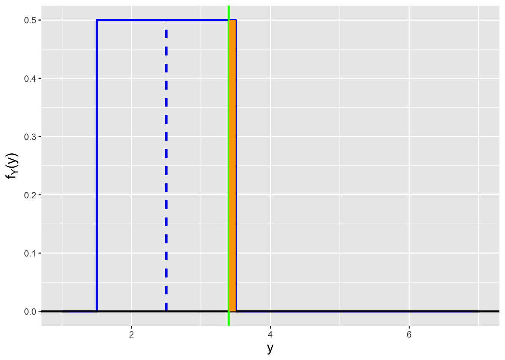
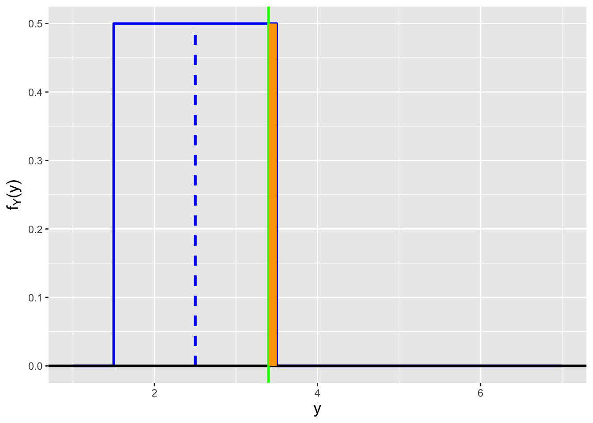

1 The Basics of Probability and Statistical Inference
1.1 Data and Statistical Populations
Data surround us, in the form of numbers, texts, images, and more that are collected and analyzed across disciplines. Tweets contain data about user sentiments. Receipts contain data about peoples buying habits. Pictures help us differentiate between, e.g., goldfish and dogs. These data\(-\)tweets, receipts, pictures\(-\)are unstructured data, so-called because we generally cannot visualize or analyze them directly. So what can we do? We can provide structure: to determine if a tweet indicates that a film was liked or disliked, we can extract counts of words indicating sentiments (e.g., good and bad). To determine the whether an image is that of a goldfish or a dog, it can be passed through appropriate filters that break down the images to a series of analyzable numbers. Etc.
The result of all this pre-processing is generation of structured data, data in the form of a table in which the columns represent particular measurements (e.g., the number of instances of the word good) and the rows representing the objects of study (e.g., individual films). Lets focus on a single table column. Perhaps its data look like this:
34.1 28.6 37.7 52.1 26.6 28.9 ...Such data are dubbed quantitative data. Quantitative data are numbers that might be discretely valued (e.g., 1, 2, and 3) or continuously valued and measured to arbitrary precision (e.g., 15.4959735). Data may also look like this:
Heads Heads Tails Heads ...These data are categorical data; each outcome is one element from a set of categories. Here that set is {Heads,Tails}.
An experiment is the act of measuring and recording a datum (like when after each flip of a coin we record \(H\) for heads and \(T\) for tails). The data we generate from experiments are drawn from populations, the sets of all possible experimental outcomes. A population can be an existing group of objects (e.g., 52 cards in a deck, eight socks of different colors in a drawer), but it can also be hypothetical (e.g., a mathematical function, like a bell curve, which indicates the relative rates at which we would draw samples with particular values). To boil down the discipline of statistics to its essence, our goal is to use the data we have drawn from a population to say something (i.e., to infer something) about the population itself. If we record the heights of 100 people, we would like to say something about the average height of humans. If we record the ice-cream flavor preferences of 500 people, we would like to infer the proportion of humans that prefer chocolate to vanilla. Etc. Data surround us and the possibilities for inference are plentiful.
We pictorially summarize what we write above in Figure 1.1. One might immediately notice the word statistic, which we have yet to define. As we see later in this chapter, a statistic is simply a function of data (such as their average value) that helps reduce data volume while (hopefully!) retaining sufficient information to allow useful inferences to happen. Defining and understanding useful statistics is a major part of this course!
Figure 1.1: The canonical experiment-and-infer cycle. We gather data sampled from an unknown population, and use statistics, or functions of the data, to infer population properties.
But, the reader says: the course is called Modern Probability and Statistical Inference. Where is probability in all of this? Probability is the so-called language of statistics, and it provides the mathematical framework upon which we can build statistical inference. Remember how above we say that a population might be a mathematical function indicating the relative rates of observing experimental outcomes? Those relative rates are probabilities (or at least probability densities). Thus the structure of this chapter (and mathemtical statistics courses as a whole): we discuss probability first, and then use our newfound knowledge to show how the enterprise of statistical inference works, both algorithmically and mathematically.
1.2 Sample Spaces and the Axioms of Probability
Probability is the long-term frequency of the occurrence of an event. For instance, what is the probability of flipping a coin and observing heads? (Intuitively, this probability is 1/2, if the coin is fair.) Or: what is the probability that a student finishes a particular test in between 30 and 40 minutes? Etc.
To build up an understanding of probability, it is conventional to start with the concept of a sample space. A sample space is the set of all possible outcomes of an experiment (or trial), which is simply some process that can, in theory, be repeated an infinite number of times. (For instance, the flipping of a coin.) For instance, if our experiment is to flip a single coin twice, the sample space would be \[ \Omega = \{HH,HT,TH,TT\} \,, \] where \(H\) and \(T\) represent observing heads and tails, respectively. (The Greek letter \(\Omega\) is a capital omega, or oh-MAY-gah.) See Figure 1.2.
Figure 1.2: This is an example of a sample space \(\Omega\), representing the experimental outcomes of flipping a single coin twice and recording the observed side of the coin. For purposes of intuition, it is common to associate the area shown for each outcome with that outcomes probability of occurrence, so here we may view the coin as an unfair one that favors tails.
The members of the set \(\Omega\) are dubbed events and they come in two varieties:
- simple events: specific experimental outcomes (e.g., \(HH\)); any two simple events in \(\Omega\) are mutually exclusive, or disjoint, as they cannot be observed simultaneously in a single experiment.
- compound events: sets of two or more simple events (e.g., \(\{HH,HT,TH\}\), which represents the set of outcomes where heads was observed at least once).
As stated above, a sample space is a set of possible experimental outcomes; thus we can apply set notation to, e.g., define specific events as functions of others:
| term | notation | intuitive terminology |
|---|---|---|
| superset | \(A \supset B\) | encompasses |
| subset | \(A \subset B\) | within |
| union | \(A \cup B\) | or |
| intersection | \(A \cap B\) | and |
| complement | \(\bar{A}\) | not |
We show examples of how we use set notation in the context of samples spaces below.
Here are a few more things to keep in mind regarding sample spaces:
- The number of simple events in \(\Omega\) (i.e., the sets cardinality) may be finite (as in the example above) or either countably or uncountably infinite (e.g., the set of all non-negative integers versus the set of real numbers). (For instance, the simple events in the experiment of repeating a task until one fails are \(\{F,SF,SSF,SSSF,\ldots\}\), where \(S\) denotes success and \(F\) denotes failure.)
- The definition of a sample space can depend upon whether the order of outcomes matters. For instance, if the order of outcomes does not matter, we could rewrite our two-coin-flip sample space as \(\Omega = \{HH,HT,TT\}\) (or \(\{HH,TH,TT\}\)).
- At no point thus far have we indicated the probability of observing any simple event. It is not the case in general that each experimental outcome is equally likely!
Regarding the last point above: while we may not know the probability of observing any simple event, there are some things we can say about its long-term relative frequency of occurrence:
- it must be \(> 0\) and \(\leq 1\);
- the relative frequencies of all simple events in \(\Omega\) must sum to 1; and
- the relative frequency of a compound event must equal the sum of the relative frequencies of its component simple events.
These statements appear to be self-evident, and as thus may be dubbed axiomatic. (A mathematical axiom is a statement accepted without proof.) In probability theory, these statements were recast as the so-called Kolmogorov axioms, introduced by Andrey Kolmogorov in 1933. Let \(A\) denote an event within \(\Omega\) (i.e., \(A \subset S\)), either simple or compound. A probability measure on \(\Omega\) is a function \(P\) from subsets of \(\Omega\) to \(\mathbb{R}^n\) that satisfies the following:
- \(P(A) \in [0,1]\);
- \(P(\Omega) = 1\); and
- if \(\{B_1,\ldots,B_k\}\) is a set of mutually exclusive simple or compound events, then \(P(\bigcup_{i=1}^k B_i) = \sum_{i=1}^k P(B_i)\), where the symbol \(\bigcup\) refers to the union of the set of events, i.e., the combination of all the events in the set into a single compound event.
1.2.1 Utilizing Set Notation
Lets suppose that we have in our hand one six-sided die, with faces numbered 1 through 6. We roll it once, and observe the value on the uppermost face. The sample space is \[ \Omega = \{1,2,3,4,5,6\} \,. \] Let the event \(A\) be all odd-numbered outcomes, and let the event \(B\) be all outcomes less than 4. Thus \(A = \{1,3,5\}\) and \(B = \{1,2,3\}\).
- What is \(\bar{A}\), the complement of \(A\)? It is the set of all outcomes not in \(A\), i.e., the set of all even-numbered faces: \(\bar{A} = \{2,4,6\}\).
- What is \(A \cup B\), the union of \(A\) and \(B\)? It is the set of all outcomes observed in either \(A\) or \(B\), without double counting: \(A \cup B = \{1,2,3,5\}\) (and not \(A \cup B = \{1,1,2,3,3,5\}\)it is meaningless to write out the same experimental outcome twice).
- What is \(A \cap B\), the intersection of \(A\) and \(B\)? It is the set of all outcomes observed in both \(A\) and \(B\), again without double counting: \(A \cap B = \{1,3\}\).
We note that we can combine unions, intersections, and complements in, e.g., the distributive law, \[ A \cap (B \cup C) = (A \cap B) \cup (A \cap C) \,, \] the associative law, \[ A \cup (B \cap C) = (A \cup B) \cap (A \cup C) \,, \] and De Morgans laws, \[ \overline{A \cup B} = \bar{A} \cap \bar{B} ~~\mbox{and}~~ \overline{A \cap B} = \bar{A} \cup \bar{B} \,. \]
1.2.2 Working With Contingency Tables
Lets assume that we are given the following information about two events \(A\) and \(B\):
| \(A\) | \(\bar{A}\) | |
|---|---|---|
| \(B\) | 0.45 | 0.12 |
| \(\bar{B}\) | 0.21 | 0.22 |
This is dubbed a contingency table (or, more specifically here, a two-by-two contigency table). The numbers in each cell represent probabilities; for instance, \(P(A \cap B) = 0.45\). A contingency table is appropriate to work with if the probabilities associated with each event do not change from experiment to experiment.
- What is \(P(A)\)? We can determine this by summing down the \(A\) column: \(P(A) = P[A \cap \Omega] = P[A \cap (B \cup \bar{B})] = P[(A \cap B) \cup (A \cap \bar{B})]\); since \(A \cap B\) and \(A \cap \bar{B}\) are disjoint, we can view the \(\cup\) as addition, and so \(P(A) = P(A \cap B) + P(A \cap \bar{B}) = 0.45 + 0.21 = 0.66\).
- What is \(P(A \cup B)\)? Utilizing De Morgans laws, this would be \(1 - P(\overline{A \cup B}) = 1 - P(\bar{A} \cap \bar{B}) = 1 - 0.22 = 0.78\).
- What is the probability of observing \(A\) or \(B\), but not both? This would be \(P(A \cup B) - P(A \cap B)\), which is \(0.78 - 0.45 = 0.33\).
It is well worth taking the time to see how one could derive each of these answers through visual inspection of the table. For instance, \(P(A \cup B)\) is 1 minus the value in the cell at lower right, which does not lie in the row for \(B\) or the column for \(A\).
1.3 Conditional Probability and the Independence of Events
Intuitively, we can picture a sample space \(\Omega\) and two of its constituent events as looking something like what we show in Figure 1.3.
Figure 1.3: A sample space with non-disjoint events \(A\) and \(B\).
We can imagine that the geometric areas of each region represent probability, with \(P(\Omega) = 1\) (given the second Kolmogorov axiom) and \(P(A \cap B) > 0\) being the probability that both \(A\) and \(B\) occur during an experiment. (Perhaps \(A\) is the event of speaking French and \(B\) is the event of living is Brussels. The symbol \(\cap\) denotes the intersection or overlap between two sets, whereas the analogous symbol \(\cup\) represents the union of two sets.)
We can use this intuitive picture to illustrate the concept of conditional probability. A stated event probability, such as \(P(A)\), is an unconditional probability: its occurrence does not depend on whether or not other events occur. To denote a conditional probability, we add a vertical bar and place the conditions to the right of it. For instance, \(P(A \vert B)\) denotes the probability that the event \(A\) is observed, given that the event \(B\) is observed. (Note that there is no implied causality: it is not necessarily the case that \(B\) occurring is causing changes to the probability that \(A\) will occur.) To illustrate why \(P(A)\) may not equal \(P(A \vert B)\), we first point out that \(P(A) = P(A \vert \Omega)\), which we may think of as the probability of observing the event \(A\) if we observe the event \(\Omega\), which is the ratio of geometric areas of \(A \cap \Omega\) and \(\Omega\): \[ P(A) = P(A \vert \Omega) = \frac{P(A \cap \Omega)}{P(\Omega)} \,. \] When we condition on the event \(B\), we are reducing the set of possible outcomes from the full sample space \(\Omega\) to \(B\), i.e., we are replacing \(\Omega\) in the expression above with \(B\): \[ P(A \vert B) = \frac{P(A \cap B)}{P(B)} \,, \]
In the context of our intuitive picture, we are changing the one shown above to the one we show in Figure 1.4.
Figure 1.4: The new sample space that arises when we condition on the event \(B\).
\(B\) thus defines a new sample space.
Two events \(A\) and \(B\) are independent if the probability of observing one does not depend on the probability of observing the other. The intuitive picture many have of independence is the one shown in Figure 1.5.
Figure 1.5: To many, \(A\) and \(B\) appear to be independent eventsbut they are simply disjoint.
The events \(A\) and \(B\) do not overlaphence they are independent events, right? No: they are simply disjoint events. Also, with reflection, we realize that if, e.g., the event \(A\) is observed in a given experiment, then we know that \(B\) cannot be observed. So these events are very much dependent! Figure 1.6 shows how we can actually represent \(A\) and \(B\) as independent events. In this figure, the ratio of the geometric area associated with the event \(A\) to the geometric area of \(\Omega\) is equal to the ratio of the areas of \(A \cap B\) and \(B\). Thus we can write that \[ P(A) = P(A \vert \Omega) = \frac{P(A \cap \Omega)}{P(\Omega)} = \frac{P(A \cap B)}{P(B)} = P(A \vert B) \,. \] The probability of observing the event \(A\) is unchanged if the event \(B\) occurs: \(A\) and \(B\) are independent events.
Figure 1.6: \(A\) and \(B\) are independent events.
1.3.1 Visualizing Conditional Probabilities: Contingency Tables
Lets recall the two-by-two contingency table we defined in the previous section, but with some additional information added:
| \(A\) | \(\bar{A}\) | ||
|---|---|---|---|
| \(B\) | 0.45 | 0.12 | 0.57 |
| \(\bar{B}\) | 0.21 | 0.22 | 0.43 |
| 0.67 | 0.33 |
The numbers in the so-called margins are the row and column sums, so, for instance, \(P(A) = 0.67\). This information is useful to have when computing conditional probabilities. In analogy with what was stated above about imposing conditions and what that does to the sample space, here we can say that imposing a condition will restrict us to a given row or a given column. For instance, what is \(P(\bar{A} \vert B)\)? The condition restricts us to the top row, and within that row, the probability of observing the event \(\bar{A}\) is 0.12/0.57 = 0.21. So \(P(\bar{A} \vert B) = P(\bar{A} \cap B) / P(B) = 0.21\).
Now, are \(A\) and \(B\) independent events? The easy way to visually infer this given a two-by-two table is to see if the rows (or columns) are multiples of each othermeaning, here, is there a number \(a\) such that \(0.45 = 0.21 a\) and \(0.12 = 0.22 a\)? The answer here is noso the events \(A\) and \(B\) are dependent events. (The conventional, yet longer way to determine independence is to see if, e.g., \(P(A \vert B) = P(A)\); if so, \(A\) and \(B\) are independent.)
1.3.2 Conditional Independence
If \(A\) and \(B\) are independent events, is it automatically the case that the events \(A \vert C\) and \(B \vert C\) are also independent events?
Recall the figure above that shows how independent events appear in a Venn diagram. Recall also that if we impose a condition \(C\), we effectively change the sample space from \(\Omega\) to \(C\). Imagine \(C\) as an arbitrarily shaped region superimposed on the last figure, so that now we have a situation like the one in Figure 1.7.
Figure 1.7: \(A\) and \(B\) are not necessarily independent events, given \(C\).
The events \(A\) and \(B\) are conditionally independent given \(C\) if \(P(C) > 0\) and \(P(A \cap B \vert C) = P(A \vert C) P(B \vert C)\). As we can see in Figure 1.7, \(C\) can be made to overlap \(B\), \(A\), and \(A \cap B\) in any number of ways such that \(P(A \cap B \vert C) \neq P(A \vert C) P(B \vert C)\)so it is not the case that if \(A\) and \(B\) are independent, \(A \vert C\) and \(B \vert C\) are always independent. (If \(C\) had a rectangular shape with a horizontal base and top and vertical sides, conditional independence would hold. Think through why this would be true)
1.4 Further Laws of Probability
Now that we have learned about the concepts of conditional probabilities and independence, we can write down some useful laws that one can use to solve an array of probability-based problems.
- Multiplicative Law. This follows simply from rearranging the definition of conditional probability: \[ P(A \cap B) = P(A) P(B \vert A) = P(B) P(A \vert B) \] We can generalize this law given an arbitrary number of events \(k\): \[\begin{align*} P(A_1 \cap A_2 \cap \cdots \cap A_k) &= P(A_1 \vert A_2 \cap \cdots \cap A_k) P(A_2 \cap \cdots \cap A_k) = \cdots \\ &= P(A_k) \prod_{i=1}^{k-1} P(A_i \vert A_{i+1} \cap \cdots \cap A_k) \,, \end{align*}\] where \(\prod\) is the product symbol, the multiplicative analogue to the summation symbol \(\sum\).
- Additive Law. The probability of the union of two events \(A\) and \(B\) is \[ P(A \cup B) = P(A) + P(B) - P(A \cap B) \,. \] If the events \(A\) and \(B\) are not disjoint, then if we add their probabilities, we count the probability of \(A \cap B\) twicehence the subtracted term.
- Law of Total Probability (LoTP). Assume that we partition the sample space \(\Omega\) into \(k\) disjoint (simple or compound) events \(\{B_1,\ldots,B_k\}\), all of which have non-zero probability of occurring. Then, given any event \(A\), we can write \[ P(A) = \sum_{i=1}^k P(A \vert B_i) P(B_i) \,. \]
- Bayes Rule. Continue to assume that the sample space is partitioned into the events \(\{B_1,\ldots,B_k\}\). The conditional probability of each of these events, given that \(A\) occurs, is \[ P(B_i \vert A) = \frac{P(A \vert B_i) P(B_i)}{\sum_{j=1}^k P(A \vert B_j)P(B_j)} = \frac{P(A \vert B_i)P(B_i)}{P(A)} \,. \]
1.4.1 The Additive Law for Independent Events
Lets assume that for a given experiment, we can define the independent events \(A\) and \(B\), with \(P(A) = 0.6\) and \(P(B) = 0.4\). What is \(P(A \cup B)\)?
In general, when solving probability problems, we look at all the rules and relationships at our disposal and see which one (or more!) contains the probabilities we know and the one we dont know, and we use that rule or relationship to derive the solution. Here, there is nothing that directly relates \(A\) and \(B\) to \(A \cup B\)the events may overlap when represented on a Venn diagram, and we dont know by how much. Exceptwe are given the word independent. That allows us to say that \(P(A \cap B) = P(A)P(B)\)and now we know that the additive law is in play: \[\begin{align*} P(A \cup B) &= P(A) + P(B) - P(A \cap B) \\ &= P(A) + P(B) - P(A \vert B)P(B) \\ &= P(A) + P(B) - P(A)P(B) = 0.6 + 0.4 - 0.6 \cdot 0.4 = 0.76 \,. \end{align*}\] Is this the only way to solve the problem? Nowe know from De Morgans laws that \(\overline{A \cup B} = \bar{A} \cap \bar{B}\), and thus \[\begin{align*} P(A \cup B) &= 1 - P(\overline{A \cup B}) = 1 - P(\bar{A} \cap \bar{B}) = 1 - P(\bar{A} \vert \bar{B})P(\bar{B}) \\ &= 1 - P(\bar{A})P(\bar{B}) = 1 - (1-0.6)(1-0.4) = 0.76 \,. \end{align*}\] There is no right way to solve a probability problemjust correct ones.
1.4.2 The Monty Hall Problem
Lets Make a Deal is a game show that has appeared on television at various times since 1963. During one part of the show, contestants are brought on stage and presented with three closed doors; behind one is an expensize prize (say, a car or an around-the-world cruise), and behind the other two are inexpensive prizes (like a years supply of Turtle Wax). The contestant is asked to pick a door (say, Door #1), at which point the shows host will open another door (say, Door #3) and show the inexpensive prize behind that door (thereby taking that door out of play). The contestant is then asked if they want to stick with the door theyve chosen (here, Door #1), or switch their choice to the other unopened door (here, Door #2). What should we advise the constestant to do?
The original, and most famous, host of Lets Make a Deal was Monty Hall. Hence: the Monty Hall Problem. (Note that the problem is often stated such that there is a car being behind one door and goats behind the other two. The author is old enough to have seen the show in its heyday and he recalls seeing no goats. Or maybe they made no impression at the time)
Assume, without loss of generality, that Door #1 is chosen. Then, let
- \(O_i\) = Monty Hall opens Door #\(i\)
- \(C_i\) = The car is behind Door #\(i\)
and assume that \(P(C_i) = 1/3\) for all \(i\). (The car could have been placed behind any door before the show was filmed.) The sample space of experimental outcomes is \[ \Omega = \{ O_2 \cap C_1 , O_2 \cap C_3 , O_3 \cap C_1 , O_3 \cap C_2\} \,. \] Why not \(O_2 \cap C_2\) and \(O_3 \cap C_3\)? Monty is not stupid: he wont open the door the car is behind. (He knows where it is!)
Lets assume, again without any loss of generality, that Monty opens Door #3. The probability we want to compute is \(P(C_2 \vert O_3)\): what is the probability that the car is actually behind Door #2? (Note that this is \(1 - P(C_1 \vert O_3)\)again, \(P(C_3 \vert O_3) = 0\), as Monty is not stupid.) Is this probability 1/2? We utilize Bayes rule and the LoTP to write \[ P(C_2 \vert O_3) = \frac{P(O_3 \vert C_2) P(C_2)}{P(O_3)} = \frac{P(O_3 \vert C_2) P(C_2)}{P(O_3 \vert C_2) P(C_2) + P(O_3 \vert C_1) P(C_1)} = \frac{P(O_3 \vert C_2)}{P(O_3 \vert C_2) + P(O_3 \vert C_1)}\,. \] What do we know?
- \(P(O_3 \vert C_2) = 1\): if the car is behind Door #2, Monty has to open Door #3
- \(P(O_3 \vert C_1) = 1/2\): Monty can open either Door #2 or #3 if the car is behind Door #1
Hence \[ P(C_2 \vert O_3) = \frac{1}{1 + 1/2} = \frac{2}{3} \,. \] We should advise the contestant to open Door #2!
Confused? Think about the solution this way: the contestant has a one-third chance of correctly picking the door the car is behind, and a two-thirds chance of being wrong. Opening one of the other doors (while knowing there is no car behind it) doesnt change these conditions at all: the contestant still has a one-third chance of having initially picked the correct door. Thus the contestant should change their pick to the other unopened door.
1.4.3 Visualizing Conditional Probabilities: Tree Diagrams
In the previous sections, we show how one can use contingency tables to aid the visualization of probabilities (and to solve for probabilities of simple and/or compound events). Here we show another, somewhat more general probability visualizer: the tree diagram. Why somewhat more general? First, a tree in a tree diagram can have arbitrary depth: if we have events \(A\), \(B\), and \(C\), the table would be three-dimensional, with the axes representing the experimental outcome in terms of \(A\) and \(\bar{A}\), \(B\) and \(\bar{B}\), and \(C\) and \(\bar{C}\). A table is not an optimal means to represent probabilities. And second, a tree is arguably a more natural means to represent probabilities when an experiment represents sequential outcomes, particularly when we sample without replacement.
Lets elaborate on that second point. Lets say we have a drawer with five socks, three of which are red and two of which are blue. We plan to draw three socks in succession from the drawer without placing the socks back into the drawer, but we will stop early if we draw two socks of the same color on the first two draws. What is the probability that our final sample contains two blue socks?
We can write out the following: if \(B_i\) and \(R_i\) are the probabilities of drawing a blue and red sock from the drawer when taking out the \(i^{\rm th}\) sock, then \(P(B_1) = 2/5\) and \(P(R_1) = 3/5\)and \(P(B_2 \vert B_1) = 1/4\) because there is one less blue sock in the drawer, and Actually, this gets tiring quickly. Lets use a tree diagram instead.
Figure 1.8: An example of visualizing probabilities using a decision tree.
In Figure 1.8, we show the tree diagram for this problem. We note some aspects of this diagram:
- the tree can be truncated along some branches (here, thats because we stop removing socks from the drawer if we remove two of the same color in the first two draws);
- at any branching point, the (conditional) probabilities of going down each branch sum to one; and
- the probability of ending up at a particular leaf (where the leaves collectively represent the simple events of the experiment) is the product of all the branch probabilities leading to that leaf.
So, now, what is the probability of drawing two blue socks in this experiment? To find that, we determine which leaves are associated with drawing two blue socks; from the top, that would be leaves 1, 2, and 4, with probabilities 1/10, 1/10, and 1/10. Because simple events are disjoint by definition, the probability of the compound event is simply the sum of the probabilities of the simple events, which here is 3/10. In any given replication of this experiment, we have a 30% chance of ending up with two blue socks.
1.5 Random Variables
Lets say that we perform an experiment in which we flip a fair coin three times. Let \(H\) denote observing heads, and \(T\) tails. The sample space of outcomes \(\Omega\) is \[ \{ HHH,HHT,HTH,THH,HTT,THT,TTH,TTT\} \] and each outcome is observed with probability 1/8. What is the probability of observing exactly one tail? We can determine this by laboriously generating a table of probabilities, like so: \[\begin{align*} P(\mbox{``no tails''}) &= P(HHH) = 1/8 \\ P(\mbox{``one tail''}) &= P(HHT \cup HTH \cup THH) = 3/8 \\ P(\mbox{``two tails''}) &= P(HTT \cup THT \cup TTH) = 3/8 \\ P(\mbox{``three tails''}) &= P(TTT) = 1/8 \,. \end{align*}\] One can easily imagine how, if we were to flip a coin 50 times, or 500 times, the generation of tables would be onerous. A better way to portray the information in a sample space is to use a random variable. In probability theory, a random variable \(X\) is a measurable function mapping from a set of outcomes (here, \(\Omega\)) to a measurable space (here, \(\mathbb{R}^n\), where \(\mathbb{R}^1 = \mathbb{R}\) is the real-number line). (See Figure 1.9.) While \(X\) is a function, it is natural in an undergraduate context to think of it as a variable whose value is an experimental outcome. For instance, if we define \(X\) as being the number of tails observed in three flips of a fair coin, then \(P(X=1) = 3/8\). (Below, we will complete our transition away from laboriously built probability tables by introducing mathematical functions\(-\)probability mass functions or probability density functions associated with distributions\(-\)that allow us to compute probabilities more generally, as a function of an arbitrary observed value \(X=x\) or a range of observed values \(X \in [a,b]\).)
Figure 1.9: A random variable is a function that maps events in \(\Omega\) to the real-number line \(\mathbb{R}\).
There are a few initial things to note about random variables. First, they are conventionally denoted with capital Latin letters (e.g., \(X\), \(Y\), \(Z\)). Second, note the words if we define above. There is no unique random variable associated with a sample space. In addition to \(X\), we could just as easily have defined \(Y\) as the number of heads observed, or \(Z\) as having value 0 if at least one head and at least one tail are observed, and 1 otherwise, etc. Third, and most important, is that random variables come in two types, discrete and continuous:
- A discrete random variable \(X\) maps the sample space \(\Omega\) to countably finite (e.g., \(\{0,1\}\)) or infinite (e.g., \(\{0,1,\ldots,\}\)) outcomes.
- A continuous random variable \(X\) maps the sample space \(\Omega\) to an outcome that is uncountably infinite (e.g., \([0,1]\) or \([0,\infty)\)).
1.6 Probability Distributions
A probability distribution is a mapping \(P: \Omega \rightarrow \mathbb{R}^n\) that describes how probabilities are distributed across the values of a random variable. (A random variable simply maps events in a sample space to a measurable space like the real-number line, without regard to the probability of the event. A distribution adds this additional layer of information.) There are different ways to mathematically define a distribution; here, we concentrate upon
- the probability mass function (or pmf): if \(X\) is a discrete random variable, this represents the probability that \(X\) takes on a particular value \(x\), i.e., \(p_X(x) = P(X = x)\); or
- the probability density function (or pdf): if \(X\) is a continuous random variable, this represents the probability density (think of this as the probability per unit interval) at the value \(x\), i.e., \(f_X(x)\).
To be clear, we can represent a given distribution with a pmf or a pdf, but not both simultaneously; the choice is dictated by whether \(X\) is discretely or continuously valued. (It is possible to mix probability masses and densities into a single distribution, however. See the example below.) Later, we introduce two alternatives to pmfs/pdfs: the cumulative distribution function (cdf), and the moment-generating function (mgf).
Probability mass and density functions have two fundamental constraints: (a) they are non-negative; and (b) they sum or integrate to 1:
| pmf | |
|---|---|
| \(p_X(x) \in [0,1]\) | \(f_X(x) \in [0,\infty)\) |
| \(\sum_x p_X(x) = 1\) | \(\int_x f_X(x) dx = 1\) |
Before continuing on to discussing properties of distributions, we reiterate the point that one cannot interpret a pdf \(f_X(x)\) as the probability of sampling the value \(x\)! It is, again, a probability density function and not a probability itself; to determine a probability, we utilize integration: \[ P(a \leq X \leq b) = \int_a^b f_X(x) dx \,. \] To drive home the point that a pdf does not itself represent probability, we note that for any value \(a\), \[ P(X = a) = \int_a^a f_X(x) dx = 0 \,. \]
1.6.1 A Simple Probability Density Function
Lets assume that we have defined the following pdf: \[ f_X(x) = \left\{ \begin{array}{cl} 2x & 0 \leq x \leq 1 \\ 0 & \mbox{otherwise} \end{array} \right. \,. \] We visualize this pdf in Figure 1.10.
Figure 1.10: The probability density function \(f_X(x) = 2x\), for \(0 \leq x \leq 1\).
This pdf helps to illustrate many of the points made above. Note that it is (a) non-negative and although its maximum value is \(> 1\), (b) it integrates > to 1. (We need not actually integrate here, as geometry is sufficient: the area under the curve is 1/2 \(\times\) 1 \(\times\) 2 = 1.)
How would one interpret this pdf? Where its value is larger, we are more likely to sample data. Full stop. What is the probability of sampling a datum between 0 and 1/2? Again, we can use geometry and see that the area under the curve is 1/2 \(\times\) 1/2 \(\times\) 1 = 1/4. (Which means the probability of sampling a datum between 1/2 and 1 must be \(1 - 1/4 = 3/4\).)
Lets extend this example a bit by adding a condition. For instance, what is the probability of sampling a datum between 1/4 and 1/2, given that we sample a datum between 0 and 3/4? In analogy with how we worked with conditional probabilities above, we can write that \[ P(1/4 \leq X \leq 1/2 \, \vert \, 0 \leq X \leq 3/4) = \frac{P(1/4 \leq X \leq 1/2 \cap 0 \leq X \leq 3/4)}{P(0 \leq X \leq 3/4)} = \frac{P(1/4 \leq X \leq 1/2)}{P(0 \leq X \leq 3/4)} \,. \] (How does this differ from computing the unconditional probability \(P(1/4 \leq X \leq 1/2)\)? Technically, it does notwe could write out a similar expression to the one above. But we note that the denominator would be \(P(0 \leq X \leq 1) = 1\) and thus it would go away.) Using geometrical arguments, we should be able to convince ourselves that the answer we seek is 1/3.
One last point we will make here is that for a continuous distribution, it is meaningless to compute \(P(X = a)\). For instance: \[ P\left(X = \frac{1}{2}\right) = \int_{1/2}^{1/2} 2 x dx = \left. x^2 \right|_{1/2}^{1/2} = \frac{1}{4} - \frac{1}{4} = 0 \,. \] What are we to make of this? Recall that a pdf is a probability density function, and that one can think of it as having units of probability per unit intervalso one has to integrate the pdf over an interval of length greater than zero to derive a non-zero probability value.
1.6.2 Shape Parameters and Families of Distributions
In the previous example, the stated pdf was the stated pdf: there was no means by which to change its shape. We can generalize it by utilizing a shape parameter: \[ f_X(x \vert \theta) = \left\{ \begin{array}{cl} \theta x^{\theta-1} & 0 \leq x \leq 1 \\ 0 & \mbox{otherwise} \end{array} \right. \,, \] where in the previous example, \(\theta = 2\). It is conventional to denote a population parameter or a set of such parameters with the Greek letter \(\theta\) (theta, pronounced thay-tah). Here, \(\theta\) represents a single, constant parameter whose value is \(> 0\). (If \(\theta\) were negative, for instance, \(f_X(x \vert \theta)\) would be \(< 0\), which is not allowed!) \(f_X(x \vert \theta)\), with \(\theta \in \Theta = (0,\infty)\), is perhaps confusingly dubbed a family of distributions. (One might think that a family would refer to a set of different mathematical forms for pdfs, like \(\theta x^{\theta-1}\) and \(e^{-x/\theta}/\theta\), etc., but it actually refers to the fact that \(\theta\) can take on more than one value, yielding a family of shapes as illustrated in Figure 1.11.)
Figure 1.11: Examples of the family of pdfs \(f_X(x \vert \theta) = \theta x^{\theta-1}\) for \(0 \leq x \leq 1\), with parameters \(\theta =\) 1/2 (solid red line), 1 (dashed green line), and 2 (dotted blue line).
1.6.3 A Simple Probability Mass Function
Lets play a game: we throw a dart at a board that has ten numbers on it, 1 through 10. Assume that we are guaranteed to hit the board, and that the regions associated with each number have the exact same size. If we hit an even number, we get 0 points, while if we hit an odd number, we get 2 points. Furthermore, if we hit a prime number, we get a bonus of 1 point. What is the probability mass function for the number of points we will score given a single throw of the dart?
If we hit the 4, 6, 8, or 10, we get 0 points. (2 is prime, so wed get a bonus of 1 point by hitting that.) If we hit the 9, we get 2 points, and if we hit the 1, 3, 5, or 7, we get 3 points. Hence the probability mass function is
| \(x\) | \(p_X(x)\) |
|---|---|
| 0 | 4/10 |
| 1 | 1/10 |
| 2 | 1/10 |
| 3 | 4/10 |
We see that this pmf is (a) non-negative and (b) has values \(p_X(x)\) that lie between 0 and 1. Because we are dealing with masses and not densities, probability calculations involve summations (while taking care to note whether one or both limits of summation lie at a mass, and if so, whether or not the inequality is, e.g., \(>\) or \(\geq\)). For instance, what is the probability of achieving a score greater than 1 point? \(P(X > 1) = p_X(2) + p_X(3) = 1/2\). What about a score of 3 points, given a score greater than 0 points? \[ P(X = 3 \vert X > 0) = \frac{P(X = 3 \cap X > 0)}{P(X > 0)} = \frac{P(X = 3)}{P(X > 0)} = \frac{p_X(3)}{p_X(1)+p_X(2)+p_X(3)} = \frac{4}{1+1+4} = \frac{2}{3} \,. \]
1.6.4 A More Complex Example Involving Both Masses and Densities
There is no reason why masses and densities cannot be combined into a single probability distribution. For instance, perhaps we have the following: \[ h_X(x) = \left\{ \begin{array}{cc} 1/2 & x \in [0,1] \\ 1/2 & x = 2 \end{array} \right. \,. \] There is nothing special about this function; the mathematics of probability calculations is just a tad more complicated than before. For instance, what is the probability of sampling a value greater than 3/4? \[ P(X > 3/4) = \int_{3/4}^1 h_X(x) dx + h_X(2) = \frac{1}{2} \left. x \right|_{3/4}^1 + \frac{1}{2} = \frac{1}{8} + \frac{1}{2} = \frac{5}{8} \,. \] Integrate over the domain(s) where densities are defined and sum over the domain(s) where masses are defined. Done!
1.7 Characterizing Probability Distributions
A probability distribution represents the rates of occurrence of different experimental outcomes. Can we determine an average outcome? In other words, can we determine what value to expect when we next run the experiment? The answer is yes: this is the expected value of a random variable (or expectation) and it is the weighted average of all possible experimental outcomes: \[\begin{align*} E[X] &= \frac{\sum_x x p_X(x)}{\sum_x p_X(x)} = \sum_x x p_X(x) ~~ \mbox{(discrete r.v.)} \\ &= \frac{\int_x x f_X(x) dx}{\int_x f_X(x) dx} = \int_x x f_X(x) dx ~~ \mbox{(continuous r.v.)} \,. \end{align*}\] In each case, the denominator disappears because it equals 1, by definition. Note that Greek letter \(\mu\) (mu, pronounced myoo), which conventionally denotes the mean value of a pdf or pmf, is also sometimes used interchangeably with \(E[X]\). See Figure 1.12.
It is important here to note the following:
- The input to the expected value operator is (usually!) a random variable, so that input is capitalized. In other words, we always write \(E[X]\) and not \(E[x]\). (\(x\) is just a coordinate on the real-number lineits expected value is simply \(x\) itself. See Expected Value Tricks in the examples below.)
- The expected value is a constant; it is not random! For any given pmf or pdf, the average value of a sampled datum does not change from experiment to experimentthere is no randomness.
Now, because the expected value is simply a weighted average, we can write down a more general expression for it: \[\begin{align*} E[g(X)] &= \frac{\sum_x g(x)p_X(x)}{\sum_x p_X(x)} = \sum_x g(x) p_X(x) ~~ \mbox{(discrete r.v.)} \\ &= \frac{\int_x g(x)f_X(x) dx}{\int_x f_X(x) dx} = \int_x g(x) f_X(x) dx ~~ \mbox{(continuous r.v.)} \,. \end{align*}\] This has been dubbed the Law of the Unconscious Statistician (e.g., Ross 1988, as noted by Casella & Berger 2002) due to the fact that we all think of it a definitionand not the result of a theorem.
A probability distribution may have an extended domain (e.g., \([0,\infty)\)) but often the probability mass or density is concentrated in a relatively small interval. A metric that represents the square of the width of that interval is the variance, which is defined as \[ V[X] = \sigma^2 = E[(X-\mu)^2] = E[X^2] - (E[X])^2 \,. \] The width itself\(-\)the square root of the variance\(-\)is dubbed the standard deviation and is denoted with the Greek letter \(\sigma\) (sigma, pronounced SIG-muh). Note that because the variance is the expected value of a squared quantity, it is always non-negative. (And like the expected value, it is a constant.) See Figure 1.12.
Figure 1.12: Examples of a probability mass function (left) and a probability density function (right), with the expected values \(E[X]\) indicated by the vertical lines and the distribution widths (here, \(E[X]-\sqrt{V[X]}\) to \(E[X]+\sqrt{V[X]}\)) indicated by the horizontal lines.
Both the expected value and variance are examples of moments of probability distributions. Moments represent elements of a distributions location and shape. In the end, moments are just expected values computed via the Law of the Unconscious Statistician, ones that are defined around the coordinate origin (\(E[X^k]\)), and ones that are defined around the distributions mean, \(\mu\) (\(E[(X-\mu)^k]\)). Other metrics used to describe a probability distribution, such as its skewness, are also related to moments. (One definition of skewness is Fishers moment coefficient: \(E[(X-\mu)^3]/\sigma^3\).)
1.7.1 Expected Value Tricks
The expected value operator \(E[X]\) has the following properties.
- If we multiply \(X\) by a constant \(a\), that constant can be moved out of the operator, i.e., \[ E[aX] = aE[X] \,. \]
- The expected value of a constant is simply that constant, i.e., \[ E[b] = b \,. \]
- The expected value operator is a linear operator, which means that we can split it at \(+\)s and \(-\)s, with the sign being preserved: \[ E[aX - b] = E[aX] - E[b] = aE[X] - b \,. \]
If, for example, we define a random variable \(Y = 10X - 5\) and we know that \(E[X] = 4\), then we can write that \(E[Y] = 10E[X] - 5 = 35\).
Note that we have said nothing about \(E[XY]\) here. In general, we cannot simplify this expression at all, unless \(X\) and \(Y\) are independent random variables (a concept we havent discussed yet), in which case \(E[XY] = E[X]E[Y]\).
1.7.2 Variance Tricks
The variance operator \(V[X]\) has the following properties.
- If we multiply \(X\) by a constant \(a\), that constant can be moved out of the operator, but it is then squared, i.e., \[ V[aX] = a^2V[X] \,. \]
- The variance of a constant is zero: \[ V[b] = 0 \,. \]
- The variance operator is a linear operator, which means that we can split it at \(+\)s and \(-\)s, with all signs becoming positive: \[ V[aX - b] = V[aX] + V[b] = a^2V[X] + 0 = a^2V[X] \,. \]
If, again, \(Y = 10X - 5\), and if \(V[X] = 2\), then \(V[Y] = 100V[X] = 200\).
1.7.3 The Shortcut Formula for Variance
Above, we indicate that \[ V[X] = E[(X-\mu)^2] = E[X^2] - (E[X])^2 \,. \] This is the so-called shortcut formula for determining the variance of a distribution. We can derive it as follows, making use of the tricks we show above: \[\begin{align*} V[X] = E[(X-\mu)^2] &= E[X^2 - 2X\mu + \mu^2] ~~\mbox{(expand)} \\ &= E[X^2] - E[2X\mu] + E[\mu^2] ~~\mbox{(split on + and -)} \\ &= E[X^2] - 2\mu E[X] + \mu^2 ~~\mbox{(slide constants out)}\\ &= E[X^2] - 2(E[X])^2 + (E[X])^2 = E[X^2] - (E[X])^2 \,, \end{align*}\] where in the last line we make use of the fact that \(E[X] = \mu\). Note what this shortcut formula means: it means that to compute a variance, it is sufficient to compute both \(E[X]\) and \(E[X^2]\) and combine the results. It also means that if we are given any two of the quantities \(E[X]\), \(E[X^2]\), and \(V[X]\), we can immediately derive the third one.
1.7.4 The Expected Value and Variance of a Probability Density Function
In the last section, we define the pdf \[ f_X(x \vert \theta) = \left\{ \begin{array}{cl} \theta x^{\theta-1} & 0 \leq x \leq 1 \\ 0 & \mbox{otherwise} \end{array} \right. \,, \] For this pdf, the expected value is \[ E[X] = \int_0^1 x f_X(x) dx = \int_0^1 \theta x^\theta dx = \frac{\theta}{\theta+1} \left. x^{\theta+1} \right|_0^1 = \frac{\theta}{\theta+1} \,. \] As for the variance, we utilize the shortcut formula, which means that we compute \(E[X^2]\) first: \[ E[X^2] = \int_0^1 x^2 f_X(x) dx = \int_0^1 \theta x^{\theta+1} dx = \frac{\theta}{\theta+2} \left. x^{\theta+2} \right|_0^1 = \frac{\theta}{\theta+2} \,. \] Hence the variance is \[ V[X] = E[X^2] - (E[X])^2 = \frac{\theta}{\theta+2} - \frac{\theta^2}{(\theta+1)^2} = \frac{\theta}{(\theta+2)(\theta+1)^2} \,. \]
We see that the value for our new pdf is similar: 0.643.
1.8 Working With R: Probability Distributions
In this section, we introduce R as a tool with which to, e.g.,
visualize and numerically manipulate probability distributions.
We start with the concept of the vector:
(The reader should feel free to open R and type in these lines
at the Console prompt.)
In this example, we define a vector of character strings which we
name x; here, x has length 1:
## [1] 1c() is an R function whose arguments (e.g., "Hello, world!") are
what are to be the constituents of the vector.
The arrow is an assignment operator; = is equally valid. We can create
a numeric vector as follows:
## [1] 1 2 4 8## [1] 4but when the numbers follow a (long) sequence, it can be easier to utilize
seq():
x <- seq(0,pi,by=0.01) # 0, 0.01, 0.02, ..., 3.14 (but not 3.15)
# pi and Inf are built-in constants
length(x)## [1] 315When it comes to probability distributions, what might we want to do first?
Lets suppose that our data are sampled from this pdf:
\[
f_X(x) = \left\{ \begin{array}{cl} c x \sin x & 0 \leq x \leq \pi \\ 0 & \mbox{otherwise} \end{array} \right. \,,
\]
\(c\) is a normalization constant, meaning it has some value (to be
determined) such that the integral of \(f_X(x)\) from 0 to \(\pi\) is 1.
Below, we will show how we can determine the value of \(c\) using R code.
But first, we will assume \(c = 1\) and
determine if \(f_X(x)\) is non-negative (as it should be!):
## [1] 0Note how we do not have to use a for-loop here, as one of the hallmarks of
R is vectorization: if R sees that x is a vector, it will work with
the vector directly and thus f.x will itself be a vector with the same
length as x (and with the first element of x corresponding to the first
element of f.x, etc.). We see that the minimum value is 0.
If we want to go further, we can make a simple plot (see Figure 1.13):
x <- seq(0,pi,by=pi/100)
f.x <- x*sin(x)
df <- data.frame(x=x,f.x=f.x)
ggplot(data=df,aes(x=x,y=f.x)) +
geom_line(col="blue",lwd=1) +
geom_hline(yintercept=0,lwd=1) +
labs(y = expression(f[X]*"(x)")) +
theme(axis.title=element_text(size = rel(1.25)))Figure 1.13: The function \(x \sin x\).
The ggplot() function puts x on the \(x\)-axis and f.x on the \(y\)-axis.
We then connect each point with a line (geom_line()),
make the line blue (col="blue"),
overlay a horizontal red line at \(y = 0\) (geom_hline(),
with yintercept=0),
and change the default \(y\)-axis label to one that includes the subscript X
(labs()).
The next step is to determine the normalization constant. Lets suppose
that we have forgotten integration by parts and thus we are not sure
how to integrate \(f_X(x)\). We can code numerical integration in R using a
combination of a function that evaluates \(f_X(x)\) and a call to the
built-in function integrate(), which performs numerical integration:
## 3.141593 with absolute error < 3.5e-14We see that the integral is \(\pi\), so to make the pdf valid, we have to set \(c\) to \(1/\pi\): \[ f_X(x) = \left\{ \begin{array}{cl} \frac{1}{\pi} x \sin x & 0 \leq x \leq \pi \\ 0 & \mbox{otherwise} \end{array} \right. \,. \]
Lets suppose we sample data from this distribution.
What is the probability that the next observed datum will
have a value between 1 and 2? We can use integrate to figure that
out:
f <- function(x) {
return(x*sin(x)/pi) # we now include the normalization constant
}
integrate(f,1,2) # integrate the function f between 1 and 2## 0.4585007 with absolute error < 5.1e-15The answer is 0.4585there is a 45.85% chance that the next datum will have a value between 1 and 2.
What is the expected value, \(E[X]\), of \(f_X(x)\)?
## 1.868353 with absolute error < 2.1e-14The expected value is 1.868. Given the appearance of the pdf, this number makes sense.
1.8.1 Numerical Integration and Conditional Probability
Lets suppose that we would like to numerically evaluate \[ P(1 \leq X \leq 2 \vert X > 0.5) = \frac{P(1 \leq X \leq 2 \cap X > 0.5)}{P(X > 0.5} = \frac{P(1 \leq X \leq 2)}{P(X > 0.5} \,. \] As we have already defined At first, it would appear that all we have to do is to call
integrate()twice
However, this will not work, since
integrate()returns a list, not a single numerical value. So we have to figure out where the value of the integral value is stored:
## [1] "value" "abs.error" "subdivisions" "message" "call"What we want is
value. To reference the value directly, we use a dollar sign, as shown here:
## [1] 0.3836833Done. Our conditional probability is 0.4645.
1.8.2 Numerical Integration and Variance
Above, we compute the expected value of \(f_X(x)\). For the variance, we adapt the same code to compute \(E[X^2]\), then utilize the shortcut formula:
f <- function(x) {
return(x^2*sin(x)/pi) # same code as above
}
E.X <- integrate(f,0,pi)$value
f <- function(x) {
return(x^3*sin(x)/pi) # add one more power of x
}
V.X <- integrate(f,0,pi)$value - E.X^2
V.X ## [1] 0.3788611## [1] 0.6155169The variance is 0.379 and the standard deviation is 0.616. We interpret these numbers as saying that the majority of the observed data will lie between \(1.868 - 0.616 = 1.252\) and \(1.868 + 0.616 = 2.484\). If we recall introductory statistics, the proportion of values within one standard deviation of the mean for a normal distribution (i.e., a bell curve) is 0.683but that value changes from distribution to distribution. What is the value here?
f <- function(x) {
return(x*sin(x)/pi) # back to the original pdf
}
integrate(f,E.X-sqrt(V.X),E.X+sqrt(V.X))$value## [1] 0.642609We see that the value for our new pdf is similar: 0.643.
1.9 Cumulative Distribution Functions
A cumulative distribution function (a cdf) is another means by which to mathematically express a probability distribution, which is to say, if we have a cdf, we can derive the associated pmf/pdf and vice-versa. A cdf is, in the discrete case, a sum of probability masses that lie to the left of a chosen coordinate \(x\) on the real-number line\(-\) \[ F_X(x) = \sum_{y \leq x} p_Y(y) \] \(-\)while in the continuous case it is an integral of the probability density that lies to the left of \(x\)\(-\) \[ F_X(x) = \int_{y \leq x} f_Y(y) dy \,. \] In both cases, we utilize a dummy variable for the pmf/pdf itself because \(x\) is the upper limit of summation/integration. See Figure 1.14, which illustrates how a cdf collects all the probability masses or density to the left of a given value of \(x\). Given this figure, it should be clear that \(F_X(-\infty) = 0\) (there is nothing to collect to the left of \(-\infty\)) and \(F_X(\infty) = 1\) (since, by the time we reach \(x = \infty\), all masses or density have been collected). Another thing to keep in mind is that even if a random variable is discrete, its associated cdf \(F_X(x)\) is continuously valued, because it is defined at all values of \(x\) (although it is technically not mathematically continuous due to the steps that \(F_X(x)\) takes at each value of \(x\) where there is a probability mass).
![\label{fig:pdfcdf}Illustration of the relationship between a probability mass function (left) and a probability density function (right) and its associated cdf (evaluated here at $x = 2.5$). For the pmf, the cdf is the sum of the probability masses to the left of $x = 2.5$ (the masses marked in green), while for the pdf, the cdf is the integral over $x \in [0,2.5]$ (the area under curve shown in green).](_main_files/figure-html/pdfcdf-2.png)
Figure 1.14: Illustration of the relationship between a probability mass function (left) and a probability density function (right) and its associated cdf (evaluated here at \(x = 2.5\)). For the pmf, the cdf is the sum of the probability masses to the left of \(x = 2.5\) (the masses marked in green), while for the pdf, the cdf is the integral over \(x \in [0,2.5]\) (the area under curve shown in green).
Figure 1.15: Examples of the cdfs \(F_X(x)\) for the probability mass function (left) and the probability density function (right) shown in Figure 1.14.
A cdf is useful to have when our goal is to compute the probability of that the value of a sampled random variable lies between \(x = a\) and \(x = b\). For the case of a continuous random variable, \[ P(a < X < b) = F_X(b) - F_X(a) \,. \] As we can see, if we have the cdf, we do not need to perform integration to compute the probabilitywe just plug in coordinate values. (Note that the form of the inequality, i.e., whether we have \(<\) or \(\leq\), does not matter.) However, when we are dealing with a discrete random variable, we need to tread far more carefully, because the form of the inequality can matter. Lets suppose we have a pmf with masses given at \(x = \{0,1\}\). Then, e.g., \[\begin{align*} P(0 \leq X \leq 1) &= \sum_{x \in [0,1]} p_X(x) = p_X(0) + p_X(1) = F_X(1) \\ P(0 < X \leq 1) &= \sum_{x \in (0,1]} p_X(x) = p_X(1) = F_X(1) - F_X(0) \\ P(0 < X < 1) &= \sum_{x \in (0,1)} p_X(x) = 0 \,. \end{align*}\]
Figure 1.16: An illustration of the relationship between a cdf and probability. The probability \(P(1 < X < 3)\) is given by the distance between the two red lines (i.e., \(F_X(3)-F_X(1)\)).
We will make two final points here about cdfs.
First, as indicated above, given a cdf, we can find the associated pmf/pdf. If a pmf has non-zero masses at values \(x - \Delta x\) and \(x\), and none in between, then \[ p_X(x) = F_X(x) - F_X(x-\Delta x) \,, \] while in the continuous case, \[ f_X(x) = \frac{d}{dx}F_X(x) \,, \] assuming \(F_X(x)\) is differentiable at \(x\).
Second, we can define an inverse cumulative distribution function, or inverse cdf. The inverse cdf takes as input the total probability collected to the left of \(x\) (e.g., the green region shown in the right panel of Figure 1.14) and returns the associated value of \(x\). In other words, if \(q = F_X(x)\), then \(x = F_X^{-1}(q)\).
One issue that arises with the inverse cdf is that if \(F_X(x)\) is not
strictly monotonically increasing
(i.e., if for some range of values, \(\frac{d}{dx}F_X(x) = 0\)) then
there is no unique inverse. For instance, see the left panel
of Figure 1.15: if we input \(F_X(x) = 0.35\), then \(x \in [2,3)\). We
can circumvent this issue by utilizing the generalized inverse cdf
instead, for which
\[
x = F_X^{-1}(q) = \mbox{inf}\{ x : F_X(x) \geq q \} \,.
\]
The symbol inf indicates that we are finding the infimum, or smallest value,
of the indicated set of values.
Here, the output \(x\) is the smallest value for which \(F_X(x) \geq q\) holds.
For our given example, \(x = 2\). On the other hand, if we pick a value of
\(F_X(x)\) that lies between the steps, we would choose the smallest \(x\) value
associated with the next higher step. For instance, if for our example we
want the inverse cdf for \(F_X(x) = 0.5\), which lies between the steps at
0.35 and 0.6, we would take the smallest value of \(x\) associated with
\(F_X(x) = 0.6\), which is \(x = 3\). (Note that R utilizes the generalized
form of the inverse cdf.)
1.9.1 The Cumulative Distribution Function for a Probability Density Function
We work again with our simple parameterized pdf: \[ f_X(x \vert \theta) = \left\{ \begin{array}{cl} \theta x^{\theta-1} & 0 \leq x \leq 1 \\ 0 & \mbox{otherwise} \end{array} \right. \,. \] The cdf for this function is simply the integral of the pdf to the left of the coordinate \(x\): \[ F_X(x \vert \theta) = \int_0^x f_Y(y \vert \theta) dy \,. \] Because the upper bound of the integral is \(x\), we replace \(x\) in the integrand with a dummy variable. (Here, \(y\) was chosen arbitrarily.) Thus \[ F_X(x \vert \theta) = \int_0^x \theta y^{\theta-1} dy = \left. y^\theta \right|_0^x = x^\theta \,. \] We can answer a variety of questions given this cdf. For example
- What is the median of this distribution?
The median \(\tilde{x}\) is the point on the real-number line where \[ P(X \leq \tilde{x}) = \frac{1}{2} \,. \] For our distribution, \[ \tilde{x}^\theta = \frac{1}{2} ~\Rightarrow~ \tilde{x} = \left( \frac{1}{2} \right)^{1/\theta} \,. \]
- Now let \(\theta = 3\). What is the probability of sampling a datum between \(x = 1/4\) and \(x = 3/4\)? \[ P\left(\frac{1}{4} \leq X \leq \frac{3}{4}\right) = F_X\left(\frac{3}{4} \vert \theta=3\right) - F_X\left(\frac{1}{4} \vert \theta=3\right) = \left(\frac{3}{4}\right)^3 - \left(\frac{1}{4}\right)^3 = \frac{26}{64} = \frac{13}{32} \,. \]
1.9.2 Visualizing the Cumulative Distribution Function in R
We continue with the pdf we use above, with \(\theta = 3\). To show the region being integrated over to compute a cdf value, for say \(x = 0.6\), we utilize
Rspolygon()function. (See Figure 1.17.)
x <- seq(0,1,by=0.01)
f.x <- 3*x^2
x.o <- 0.6
df <- data.frame(x=x,f.x=f.x)
df.shade <- subset(df,x<=x.o)
ggplot(data=df,aes(x=x,y=f.x)) +
geom_line(col="blue",lwd=1) +
geom_area(data = df.shade,aes(x,y=f.x),fill="green",col="blue",outline.type="full") +
geom_vline(xintercept=x.o,col="red",lwd=1) +
labs(y = expression(f[X]*"(x)")) +
theme(axis.title=element_text(size = rel(1.25)))Figure 1.17: The cdf for \(f_X(x) = 3x^2\) at \(x = 0.6\) is the area represented in green.
What is happening in this code chunk? We first define a sequence of values for
x(viaseq()), then compute the pdf for eachxvalue (f.x). We then define a data frame withxandf.xas columns, and determine which rows correspond to values ofxthat are less than or equal to 0.6 (viasubset()). To create the polygon, we pass the subset data framedf.shadeto the functiongeom_area().
If we wish to visualize the full cdf, we can do the following. (See Figure 1.18.)
x <- seq(0,1,by=0.01)
F.x <- x^3
df <- data.frame(x=x,F.x=F.x)
ggplot(data=df,aes(x=x,y=F.x)) +
geom_hline(yintercept=0,lty=2,col="red") +
geom_hline(yintercept=1,lty=2,col="red") +
geom_line(col="blue",lwd=1) +
geom_segment(x=-1,xend=0,y=0,yend=0,col="blue",lwd=1) +
geom_segment(x=1,xend=2,y=1,yend=1,col="blue",lwd=1) +
labs(y = expression(F[X]*"(x)")) +
theme(axis.title=element_text(size = rel(1.25)))Figure 1.18: The cdf for \(f_X(x) = 3x^2\).
1.9.3 The CDF for a Mathematically Discontinuous Distribution
Assume that we are handed the following pdf: \[ f_X(x \vert \theta) = \left\{ \begin{array}{cl} 1/2 & 0 \leq x \leq 1 \\ 2-x & 1 \leq x \leq 2 \\ 0 & \mbox{otherwise} \end{array} \right. \,, \] which we display in Figure 1.19.
df <- data.frame(x=c(-0.25,0,0,1,1,2,2.25),f.x=c(0,0,0.5,0.5,1,0,0))
ggplot(data=df,aes(x=x,y=f.x)) +
geom_line(col="blue",lwd=1) +
geom_hline(yintercept=0,lwd=1) +
labs(y = expression(f[X]*"(x)")) +
theme(axis.title=element_text(size = rel(1.25)))
Figure 1.19: A continuous probability density function that is mathematically discontinuous at \(x=1\).
This is a completely valid, continuous pdf that has a mathematical discontinuity at \(x = 1\). What is the cdf for this function?
The key insight is that we should not try to evaluate the integral of \(f_X(x)\) from 0 to \(x\) when \(x > 1\) with a single integralthis will not work! We simply have to break the problem up so as to define the cdf over the domain [0,1), and then over the domain [1,2]. \[\begin{align*} F_X(x \vert x < 1) &= \int_0^x f_Y(y) dy = \frac{1}{2} \int_0^y dy = \frac{x}{2} \\ F_X(x \vert x \geq 1) &= \int_0^1 f_Y(y) dy + \int_1^x f_Y(y) dy = \left. \frac{y}{2} \right|_0^1 + \int_1^x (2-y) dy = \frac{1}{2} - \left. \frac{(2-y)^2}{2} \right|_1^x \\ &= \frac{1}{2} - \left( \frac{(2-x)^2}{2} - \frac{1}{2} \right) = 1 - \frac{(2-x)^2}{2} \,. \end{align*}\] (Not sure if this is right? We can at the very least do sanity checking, as we know \(F_X(1) = 1/2\) and \(F_X(2) = 1\)and our formula produces these results! Alternatively, we can take the derivative of \(F_X(x)\) and see if it matches \(f_X(x)\).) We display the cdf in Figure 1.20.
x.seq <- seq(1.01,2,by=0.01)
x <- c(0,1,x.seq)
F.x <- c(0,0.5,1-(2-x.seq)^2/2)
df <- data.frame(x=x,F.x=F.x)
ggplot(data=df,aes(x=x,y=F.x)) +
geom_hline(yintercept=0,lty=2,col="red") +
geom_hline(yintercept=1,lty=2,col="red") +
geom_line(col="blue",lwd=1) +
geom_segment(x=-1,xend=0,y=0,yend=0,col="blue",lwd=1) +
geom_segment(x=2,xend=3,y=1,yend=1,col="blue",lwd=1) +
labs(y = expression(F[X]*"(x)")) +
theme(axis.title=element_text(size = rel(1.25)))Figure 1.20: The cdf for our mathematically discontinuous pdf.
1.10 The Law of Total Probability
One of the laws of probability that we introduce earlier in this chapter is the Law of Total Probability, or LoTP: if we partition a sample space \(\Omega\) into \(k\) disjoint events \(\{B_1,\ldots,B_k\}\), then for any event \(A\) we can write \[ P(A) = \sum_{i=1}^k P(A \vert B_i) P(B_i) \,. \] We are in a position now, having introduced random variables and probability distributions, to update how we think of this law: it can express the probability of a random variable \(X\) when it is sampled from a discrete distribution with parameter \(\theta\)and when \(\theta\) itself is not a fixed constant (as it has been up until now), but is itself a discrete random variable. To see this, lets rewrite the LoTP given this description: \[ p_X(x) = \sum_\theta p_{X \vert \theta}(x \vert \theta) p_{\Theta}(\theta) \,. \] This equation is saying that the probability mass associated with the coordinate \(x\) is the value of the mass for \(x\), given the value \(\theta\), weighted by the probability that we would even observe the value \(\theta\) in the first place. Or, that \(p_X(x)\) is a weighted average of the values of the conditional distribution \(p_{X \vert \theta}(x \vert \theta)\), where the weights are given by \(p_{\Theta}(\theta)\).
What if \(\theta\) is actually a continuous random variable? We can extend the LoTP to handle that possibility by replacing the summation over a discrete random variable with an integral over a continuous one: \[ p_X(x) = \int_\theta p_{X \vert \theta}(x \vert \theta) f_{\Theta}(\theta) d\theta \,. \] And what if the distribution of \(X \vert \theta\) is continuous? We would just replace the \(p_X\) and the \(p_{X \vert \theta}\) in the equations above with \(f_X\) and \(f_{X \vert \theta}\), i.e., we would use the LoTP to define a probability density instead of a probability mass.
1.10.1 The LoTP With Two Simple Discrete Distributions
Lets suppose we have two random variables \(X\) and \(Y\), where the probability mass function for \(Y\) is
| \(y\) | \(p_Y(y)\) |
|---|---|
| 0 | 2/3 |
| 1 | 1/3 |
and where, if \(Y = 0\), the pmf for \(X\) is
| \(x \vert y=0\) | \(p_{X \vert Y}(x \vert y=0)\) |
|---|---|
| 0 | 4/5 |
| 1 | 1/5 |
and if \(Y = 1\) the pmf for \(X\) is
| \(x \vert y=1\) | \(p_{X \vert Y}(x \vert y=1)\) |
|---|---|
| 0 | 3/5 |
| 1 | 2/5 |
What is the pmf \(p_X(x)\)?
The Law of Total Probability tells us that \[ p_X(x) = \sum_y p_{X \vert Y}(x \vert y) p_{Y}(y) \,, \] so \[\begin{align*} p_X(0) &= p_{X \vert Y}(0 \vert 0) p_{Y}(0) + p_{X \vert Y}(0 \vert 1) p_{Y}(1) = \frac{4}{5} \cdot \frac{2}{3} + \frac{3}{5} \cdot \frac{1}{3} = \frac{11}{15} \\ p_X(1) &= p_{X \vert Y}(1 \vert 0) p_{Y}(0) + p_{X \vert Y}(1 \vert 1) p_{Y}(1) = \frac{1}{5} \cdot \frac{2}{3} + \frac{2}{5} \cdot \frac{1}{3} = \frac{4}{15} \,. \end{align*}\] The pmf is thus
| \(x\) | \(p_X(x)\) |
|---|---|
| 0 | 11/15 |
| 1 | 4/15 |
The masses sum to 1, so indeed this is a proper pmf.
1.10.2 The Law of Total Expectation
If we inspect the tables above, we see that, e.g., \[\begin{align*} E[X \vert Y=0] &= 0 \cdot \frac{4}{5} + 1 \cdot \frac{1}{5} = \frac{1}{5} \,. \end{align*}\] A similar calculation yields \(E[X \vert Y=1] = 2/5\). What then is the expected value of \(X\) itself?
A result related to the Law of Total Probability is the Law of Total Expectation (LoTE), which states that when \(Y\) is finite and countable, \[ E[X] = E[E[X \vert Y]] = \sum_y E[X \vert Y=y] ~ p_Y(y) \,, \] i.e., the overall expected value is a weighted average of the individual values \(E[X \vert Y=y]\). Here, the LoTE yields \[ E[X] = \frac{1}{5} \cdot \frac{2}{3} + \frac{2}{5} \cdot \frac{1}{3} = \frac{4}{15} \,. \]
1.10.3 The LoTP With Two Continuous Distributions
Lets suppose that we have two random variables, \(X\) and \(\theta\), such that \[\begin{align*} f_{X \vert \Theta}(x \vert \theta) &= \theta \exp(-\theta x) \\ f_{\Theta}(\theta) &= \exp(-\theta) \,, \end{align*}\] for \(x \in [0,\infty)\) and \(\theta > 0\). What is \(f_X(x)\)?
As mentioned above, the primary change to the LoTP would be that we use integrate over all possible values of \(\theta\), rather than sum, so the LoTP looks like this: \[ f_X(x) = \int_0^\infty f_{X \vert \Theta}(x \vert \theta) f_{\Theta}(\theta) d\theta \,. \] Now that weve established this equation, the rest is mathexcept as well see, we need to use integration by parts. \[\begin{align*} f_X(x) &= \int_0^\infty \theta \exp(-\theta x) \exp(-\theta) d\theta \\ &= \int_0^\infty \theta \exp(-\theta (x+1)) d\theta \,. \end{align*}\] We set up the integration as follows: \[\begin{align*} u = \theta ~~~ & ~~~ dv = \exp(-\theta (x+1)) d\theta \\ du = d\theta ~~~ & ~~~ v = -\frac{1}{x+1}\exp(-\theta (x+1)) \,. \end{align*}\] Then \[\begin{align*} f_X(x) &= \left.(u v)\right|_0^\infty - \int_0^\infty v du \\ &= -\left.\frac{\theta}{x+1}\exp(-\theta (x+1))\right|_0^\infty + \int_0^\infty \frac{1}{x+1}\exp(-\theta (x+1)) d\theta \\ &= 0 + \int_0^\infty \frac{1}{x+1}\exp(-\theta (x+1)) d\theta \,. \end{align*}\] (We will stop here momentarily to remind the reader that when we evaluate an expression of the form \(x e^{-x}\), the result as \(x \rightarrow \infty\) is zero because \(e^{-x} \rightarrow 0\) faster than \(x \rightarrow \infty\). We now carry on) \[\begin{align*} f_X(x) &= \int_0^\infty \frac{1}{x+1}\exp(-\theta (x+1)) d\theta \\ &= \left. -\frac{1}{(x+1)^2} \exp(-\theta (x+1)) \right|_0^\infty \\ &= \frac{1}{(x+1)^2} \,, \end{align*}\] for \(x \in [0,\infty)\). Done. We will leave it as an exercise to the reader to confirm that \(f_X(x)\) is a valid pdf that integrates to one.
Above, we say that we need to use integration by parts. This is not quite true. A handy result that we will utilize as the book goes on is that \[ \Gamma(t) = \int_0^\infty u^{t-1} \exp(-u) du \,. \] This is the gamma function. (The symbol \(\Gamma\) represents a capital gamma.) One of the properties that makes this function useful is that when \(x\) is a non-negative integer, the gamma function is related to the factorial function: \(\Gamma(x) = (x-1)! = (x-1) (x-2) \cdots 1\). But the reason why the gamma function is useful here is that we can use it to avoid integration by parts.
Our integral is \[ f_X(x) = \int_0^\infty \frac{1}{x+1}\exp(-\theta (x+1)) d\theta \,. \] To solve this, we implement variable substitution. The three steps of variable substitution are
- to write down a viable substitution \(u = g(\theta)\);
- to then derive \(du = h(u,\theta) d\theta\); and finally
- to use \(u = g(\theta)\) to transform the bounds of the integral.
For our integral \[ (1) ~~ u = (x+1)\theta ~~ \implies ~~ (2) ~~ du = (x+1)d\theta \] and \[ (3) ~~ \theta = 0 ~\implies~ u = 0 ~~~ \mbox{and} ~~~ \theta = \infty ~\implies~ u = \infty \,, \] We see from point (3) that making the variable substitution will not affect the bounds of the integral. Thus we have that \[\begin{align*} f_X(x) &= \int_0^\infty \frac{1}{x+1}\exp(-u) \frac{du}{x+1} \\ f_X(x) &= \frac{1}{(x+1)^2} \int_0^\infty u^0 \exp(-u) du \\ f_X(x) &= \frac{1}{(x+1)^2} \Gamma(1) = \frac{1}{(x+1)^2} 0! = \frac{1}{(x+1)^2} \,. \end{align*}\] (Here, we utilize the fact that zero factorial is one.)
1.11 Working With R: Data Sampling
One of the primary uses of R is to perform simulations in which
we repeatedly create mock datasets and analyze them. But: how do we
create such datasets?
Below, we will describe two methods for randomly sampling data given
a probability distribution. The first, rejection sampling, is appropriate
to use when we cannot work with the cumulative distribution function of the
assumed distribution analytically (i.e., with pencil and paper).
As we will see, rejection sampling
is (relatively) computationally inefficient, but it does have the benefit
that we can apply it in just about any sampling situation. The second
method, inverse transform sampling, is efficient and should always be
our first choice when the cdf is tractable. To head off a question the
reader may have: no, we do not always have to hand-code samplers when working
in Rfor commonly used distributions, R supplies wrapper functions
that effectively abstract away the details of inverse transform sampling.
However, knowing how to code a sampler is a good skill to have!
Lets suppose we are working with one of the pdfs that we define above: \[ f_X(x) = \left\{ \begin{array}{cl} \frac{1}{\pi} x \sin x & 0 \leq x \leq \pi \\ 0 & \mbox{otherwise} \end{array} \right. \,, \] The cdf for this distribution is \[ F_X(x) = \frac{1}{\pi}\left( \sin x - x \cos x \right) \,, \] which is not easily inverted. Thus to sample data from this distribution, we utilize the following algorithmic steps.
- Determine the range of values over which we will sample data values: \([x_{lo},x_{hi}]\). Nominally this will be the domain of the distribution, but sometimes thats not viable, such as when the domain is semi- or fully infinite. (Here, the range is easily specified: \([0,\pi]\).)
- Within \([x_{lo},x_{hi}]\), determine the maximum value of \(f_X(x)\).
(For our assumed distributione, this is not necessarily a simple
calculation, as the derivative of \(f_X(x)\) is \((\sin x + x \cos x)/\pi\).
We can solve for the root using, e.g.,
Rsuniroot()function:
## [1] 2.028758This looks for the root of the given function within the stated interval;
since there is a root at 0, corresponding to a functional minimum, we
exclude that point by setting the interval lower bound to 0.01. uniroot()
is an extremely useful function and we will see it again throughout the
rest of this book. The root is \(x_{max} = 2.0288\) and
\(f_X(x_{max}) = 0.5792\).)
3. We repeat the following steps until we reach our target
sample size \(n\): (a) sample
a random number \(u\) assuming uniform weighting between \(x_{lo}\) and \(x_{hi}\);
(b) sample another random number \(v\) assuming uniform weighting
between 0 and \(f_X(x_{max})\);
and (c) keep \(u\) as part of our sample if \(v \leq f_X(u)\).
(a) and (b) are summed up by the statement draw a rectangle whose vertices
are \((x_{lo},0)\), \((x_{hi},0)\), \(x_{hi},f_X(x_{max}))\), and
\(x_{lo},f_X(x_{max}))\) and pick a random point inside the rectangle,
while (c) is summed up by saying keep the random point if it lies below
\(f_X(x)\).
Note that we will
assume that at the very least, we can use an R wrapper function to sample
a numbers with uniform weighting; without this assumption, we would have
to wade into the quagmire that is random number generation, which is
well beyond the scope of this book!
In a code chunk and in Figure 1.21 we show how we sample \(n = 1000\) data sampled from our distribution, and the final result. (We dub the observed distribution the empirical distribution of the data, where empirical simply means what we actually observe.) Rejection sampling seems quick and easyshould we always use it when we are not already provided a sampling function for our pmf or pdf? No, not necessarily, because as noted above it is computationally inefficient: we might have to sample \(m \gg n\) points in order to populate a sample of size \(n\).
(We will also note here that this is the first time that we are running
across the R function set.seed(). This initializes the underlying random
number generator such that we generate the same numerical results every time
we run the subsequent codewhich is useful when doing analyses that
we want to be reproducible.
If we leave out set.seed(), then every time we run the subsequent code, we
get a different data sample. The number that we pass to set.seed()
can be anythingwe adopt 101 here, but it can any real number.)
set.seed(101)
n <- 1000
x.lo <- 0
x.hi <- pi
f.x.hi <- 0.58 # rounding up is OK, it just decreases algorithm efficiency
X.sample <- rep(NA,n) # rejection sampling
ii <- 0
while ( ii < n ) {
u <- runif(1,min=x.lo,max=x.hi)
v <- runif(1,min=0,max=f.x.hi)
if ( v < u*sin(u)/pi ) {
ii <- ii+1
X.sample[ii] <- u
}
}
empirical.dist <- data.frame(X.sample=X.sample)
x <- seq(0,pi,by=0.01)
f.x <- x*sin(x)/pi
true.dist <- data.frame(x=x,f.x=f.x)
ggplot(data=empirical.dist,aes(x=X.sample)) +
geom_histogram(aes(y=after_stat(density)),col="black",fill="blue",
breaks=seq(0,3.2,by=0.2)) +
geom_line(data=true.dist,aes(x=x,y=f.x),col="red",lwd=1) +
labs(x="x") +
theme(axis.title=element_text(size = rel(1.25)))Figure 1.21: \(n = 1000\) data sampled from the distribution \(f_X(x) = (x \sin x)/\pi\) via the rejection sampling algorithm. We observe that our empirical distribution follows the true distribution well.
A primary alternative to rejection sampling is inverse transform sampling, in which we utilize the inverse cdf function to generate appropriately distributed data. Inverse transform sampling is efficient in that every proposal point is kept.
Lets suppose we are working with the pdf: \[ f_X(x) = \theta x^{\theta-1} \,, \] where \(\theta > 0\) and \(x \in [0,1]\). The inverse cdf, as derived in an example above, is \(F_X^{-1}(q) = q^{1/\theta}\). Inverse transform sampling utilizes the following algorithmic steps.
- Pick the target sample size \(n\).
- Sample \(n\) data with uniform weighting between 0 and 1. These are the cdf bounds. Call these data \(q\).
- Transform the data \(q\) to be \(x = F_X^{-1}(q)\).
In a code chunk and in Figure 1.22 we display our inverse-transform sampling code as well as the empirical distribution of \(n = 1000\) data sampled from our distribution (assuming \(\theta = 3\)). We note that the code to generate our sample is much simpler than the code needed to perform rejection sampling!
set.seed(101)
theta <- 3
n <- 1000
q <- runif(n,min=0,max=1)
X.sample <- q^(1/theta)
empirical.dist <- data.frame(X.sample=X.sample)
x <- seq(0,1,by=0.01)
f.x <- theta*x^(theta-1)
true.dist <- data.frame(x=x,f.x=f.x)
ggplot(data=empirical.dist,aes(x=X.sample)) +
geom_histogram(aes(y=after_stat(density)),col="black",fill="blue",
breaks=seq(0,1,by=0.1)) +
geom_line(data=true.dist,aes(x=x,y=f.x),col="red",lwd=1) +
labs(x="x") +
theme(axis.title=element_text(size = rel(1.25)))Figure 1.22: \(n = 1000\) data sampled from the distribution \(f_X(x) = 3x^2\) via the inverse transform sampling algorithm. We observe that our empirical distribution follows the true distribution well.
1.11.1 More Inverse-Transform Sampling
Lets suppose that we are to sample \(n\) data from the following distribution: \[ f_X(x) = 2(1-x) ~~~ x \in [0,1] \,. \] Can we do this via inverse-transform sampling? The answer is yes, if (a) we can derive the cdf \(F_X(x)\), and (b) we can invert it. Here, \[ F_X(x) = \int_0^x f_V(v) dv = \int_0^x 2(1-v) dv = \left. -(1-v)^2 \right|_0^x = -(1-x)^2 - (-1) = 1 - (1-x)^2 \,. \] To invert the cdf, we set it equal to \(q\) and solve for \(x\): \[\begin{align*} q &= 1 - (1-x)^2 \\ \Rightarrow ~~~ 1 - q &= (1-x)^2 \\ \Rightarrow ~~~ \sqrt{1 - q} &= 1-x \\ \Rightarrow ~~~ x &= 1 - \sqrt{1 - q} \., \end{align*}\] To check for the correctness of our inversion, we utilize a code like the one in the main body of the section above and compare our sampled data against the pdf. See Figure 1.23.
set.seed(101)
n <- 1000
q <- runif(n,min=0,max=1)
X.sample <- 1 - sqrt(1-q)
empirical.dist <- data.frame(X.sample=X.sample)
x <- seq(0,1,by=0.01)
f.x <- 2*(1-x)
true.dist <- data.frame(x=x,f.x=f.x)
ggplot(data=empirical.dist,aes(x=X.sample)) +
geom_histogram(aes(y=after_stat(density)),col="black",fill="blue",
breaks=seq(0,1,by=0.1)) +
geom_line(data=true.dist,aes(x=x,y=f.x),col="red",lwd=1) +
labs(x="x") +
theme(axis.title=element_text(size = rel(1.25)))Figure 1.23: \(n = 1000\) data sampled from the distribution \(f_X(x) = 2(1-x)\) via the inverse transform sampling algorithm. We observe that our empirical distribution follows the true distribution well.
1.12 Statistics and Sampling Distributions
Lets say that we run an experiment in which we randomly sample many data from some distribution \(P\): \[ \mathbf{X} = \{X_1,X_2,\ldots,X_n\} \overset{iid}{\sim} P \,. \] The expected value for this distribution is \(E[X] = \mu\), while the variance is \(V[X] = \sigma^2\) (assumed to be finite).
So we have datanow what?
Figure 1.24: The canonical experiment-and-infer cycle. We gather data sampled from an unknown population, assume that the population can be represented by some family of distributions parameterized by \(\theta\), and compute and use statistics to infer the value(s) of \(\theta\).
The answer, typically, is that we would use these data to infer the (unknown) properties of the population from which they are drawn. A simple picture of the experiment-and-infer cycle is given in Figure 1.24. Notice how in this figure we use the term statistical inference. (Fitting, as it is part of the name of this course!) This is an appropriate term to use because we utilize statistics when trying to infer the properties of the unknown underlying population, like its true mean \(\mu\). But this motivates a next question
What is a statistic?
A statistic is simply a function of the data we observe. It can be any function of the data\(-\)\(X_1\), sin\((X_1) + \pi X_2\), etc.\(-\)and it provides a useful means by which to summarize data (i.e., reduce \(n\) numbers to a single number). But it should be intuitively obvious (we would hope!) that some statistics are going to be more informative than others: for instance, if we are trying to infer what \(\mu\) might be, \(X_1\) is probably going to be more useful to us than sin\((X_1) + \pi X_2\). But it may not (nay, will not) be the most useful quantity when the sample size \(n > 1\). We could say that much of what we do as statisticians is to pick appropriate (and optimal!) statistics to perform inference.
What are some common statistics?
- The sample mean: \[ \bar{X} = \frac{1}{n} \sum_{i=1}^n X_i \,. \] This is always useful for inferring a population mean. Why it is better than, e.g., \(X_1\) when \(n > 1\) will become more clear below. (Foreshadowing: there are metrics we can compute that provide numerical assessments of the usefulness of a statistic for performing inference. We introduce some of these metrics in the next section.)
- The sample variance: \[ S^2 = \frac{1}{n-1} \sum_{i=1}^n (X_1 - \bar{X})^2 \,. \] As we might guess, this one helps us infer population variances, and thus helps us make sense of the width of the pmf or pdf from which the data are sampled. The square root of \(S^2\) is the sample standard deviation. (One might ask: why \(n-1\)? Metrics, againwe will return to this point below when we discuss point estimation.)
- The sample range: \[ R = X_{(n)} - X_{(1)} \,. \] Here, we introduce a notational wrinkle: \(X_{(i)}\) represents the \(i^{\rm th}\) smallest datum. So \(X_{(1)}\) is the observed datum with the smallest value (but not necessarily the first one to be recorded in our experiment), and \(X_{(n)}\) is the one with the largest value. \(X_{(\cdot)}\) is dubbed an order statistic and we will illustrate its use as we go on, beginning in Chapter 3.
- There are a myriad of others: the interquartile range, the median, etc.
We have stated what a statistic is: it is a function of the observed data. But what does this imply? It implies that statistics, which are functions of random variables, are themselves random variables, and thus are sampled from a pmf or pdf. It is convention to call the pmf or pdf associated with a given statistic the sampling distribution, but we are not necessarily fans of the term: it makes it sound like something new and different, when in reality a sampling distribution is just another pmf or pdf, with properties equivalent to those discussed earlier in the chapter (e.g., a sampling distribution has an expected value, a variance, etc.).
As we will see in the first example below, if the statistic is a linear function of random variables (like the sample mean), we can derive its expected value, variance, and standard error now given the tools we already have at our disposal. The term standard error simply refers to the standard deviation of a sampling distribution, i.e., \[ se[Y] = \sqrt{V[Y]} \,, \] where \(Y\) is our statistic. Now, can we go beyond this and derive the mathematical form of a statistics pmf or pdf now? The short answer is nowe have not yet introduced methods for deriving the functional forms of sampling distributions.
- In Chapter 2, we will introduce moment-generating functions, which can help us derive sampling distributions for linear functions of random variables (an example of which is the sample mean).
- In Chapter 3, we will show how one can write down the pmf or pdf for order statistics (like the sample median); once the sampling distribution is known, then we can derive its expected value and variance.
(As an aside, we should mention here the empirical rule. While nominally about the normal distribution, we will think of it as stating that nearly all statistics should be observed as laying within three standard errors of their population means. For instance, as we show below in an example, \(E[\bar{X}] = \mu\), so virtually all values of \(\bar{X}\), as observed over repetitions of an experiment, should lie in the range \([\mu - 3 \cdot se(\bar{X}),\mu + 3 \cdot se(\bar{X})]\), a range that gets smaller and smaller as the sample size \(n\) goes to infinity.)
There are, however, two paths that one could follow that allow us to build up an empirical sampling distribution for a statistic. The first assumes that we know (or are willing to assume) the pmf or pdf for the individual data: we would repeatedly simulate data from the distribution and record the values for the statistic. This builds off of the material in the last section above. (See the example below, as well as the last section of this chapter.) The other is useful for situations where we do not know nor are willing to assume the form of the pmf or pdf for the individual datathis is the bootstrap. We discuss the bootstrap technique in Chapter 4.
Many important results in statistical inference assume that we have collected a sample of \(n\) iid random variables, so over the course of the rest of this chapter and for the next several, we will assume that when we have sampled two or more random variables, they will be iid random variables. (We will discuss concepts related to simultaneously sampling values for two or more dependent random variables in Chapter 6.)
1.12.1 Expected Value and Variance of the Sample Mean (For All Distributions)
Given \(n\) iid data from some distribution, we can use the results from earlier in this chapter to immediately show that \[ E[\bar{X}] = E\left[\frac{1}{n}\sum_{i=1}^n X_i\right] = \frac{1}{n}E\left[\sum_{i=1}^n X_i\right] = \frac{1}{n}\sum_{i=1}^n E[X_i] = \frac{1}{n}\sum_{i=1}^n \mu = \frac{1}{n} n \mu = \mu \,, \] and \[ V[\bar{X}] = V\left[\frac{1}{n}\sum_{i=1}^n X_i\right] = \frac{1}{n^2} V\left[\sum_{i=1}^n X_i\right] = \frac{1}{n^2} \sum_{i=1}^n V[X_i] = \frac{1}{n^2} n \sigma^2 = \frac{\sigma^2}{n} \,. \] The standard error for the sample mean is thus \(\sqrt{\bar{X}} = \sigma/\sqrt{n}\). There are two important conclusions to take away from this simple example. First, we never state the distribution from which we sample the initial data, so this is a general result that holds for all distributions. Second, we see that the width of the sampling distribution for the sample mean decreases as we collect more and more data, as \(1/\sqrt{n}\), meaning that any inferences that we make about the population mean will become more and more accurate as the sample size increases.
1.12.2 Visualizing the Distribution of the Sample Mean
In an example in the last section above, we use inverse-transform sampling to sample data from the pdf \(f_X(x) = 2(1-x)\) for \(x \in [0,1]\). Here, we extend our
Rcode so as to visualize the distribution of the sample mean of \(n = 10\) data drawn from this distribution. We note that some of the material below foreshadows that which we cover in the last section of this chapter, when we discuss numerical simulation.
set.seed(101)
n <- 10
num.sim <- 1000
X.bar <- rep(NA,num.sim) # set aside storage for X.bar
# NA == Not Available - this is overwritten
for ( ii in 1:num.sim ) {
q <- runif(n,min=0,max=1)
X.sample <- 1 - sqrt(1-q)
X.bar[ii] <- mean(X.sample)
}
empirical.mean <- data.frame(X.bar=X.bar)
x <- seq(0,1,by=0.01)
f.x <- 2*(1-x)
pdf <- data.frame(x=x,f.x=f.x)
ggplot(data=empirical.mean,aes(x=X.bar)) +
geom_histogram(aes(y=after_stat(density)),col="black",fill="blue",
breaks=seq(0,1,by=0.05)) +
geom_line(data=pdf,aes(x=x,y=f.x),col="red",lwd=1) +
geom_vline(xintercept=1/3,col="green",lwd=1) +
geom_segment(x=1/3-0.0745,xend=1/3+0.0745,y=2.5,yend=2.5,col="green",lwd=1) +
labs(x="x") +
theme(axis.title=element_text(size = rel(1.25)))![\label{fig:sampmean} The empirical distribution of the sample mean of $n = 10$ data sampled from the distribution $f_X(x) = 2(1-x)$ for $x \in [0,1]$. The red line indicates $f_X(x)$, while the vertical and horizontal green lines indicate $E[\bar{X}] = \mu = 1/3$ and the range $[\mu-se(\bar{X}),\mu+se(\bar{X})] = [0.2588,0.4078]$. The shape of the empirical distribution is approaching that of a normal distribution, a result that we will discuss in Chapter 2 when introducing the Central Limit Theorem.](_main_files/figure-html/sampmean-1.png)
Figure 1.25: The empirical distribution of the sample mean of \(n = 10\) data sampled from the distribution \(f_X(x) = 2(1-x)\) for \(x \in [0,1]\). The red line indicates \(f_X(x)\), while the vertical and horizontal green lines indicate \(E[\bar{X}] = \mu = 1/3\) and the range \([\mu-se(\bar{X}),\mu+se(\bar{X})] = [0.2588,0.4078]\). The shape of the empirical distribution is approaching that of a normal distribution, a result that we will discuss in Chapter 2 when introducing the Central Limit Theorem.
See Figure 1.25. The mean of our pdf is \[ E[X] = \int_0^1 2x(1-x) dx = \int_0^1 2xdx - \int_0^1 2x^2dx = \left. x^2 \right|_0^1 - \left. \frac{2}{3}x^3 \right|_0^1 = 1 - \frac{2}{3} = \frac{1}{3} \,. \] This is indicated via the green vertical line in the figure. The variance is \[\begin{align*} V[X] &= E[X^2] - (E[X])^2 \\ &= \left[ \int_0^1 2x^2dx - \int_0^1 2x^3dx \right] - \left(\frac{1}{3}\right)^2 \\ &= \left(\frac{2}{3} - \frac{1}{2}\right) - \frac{1}{9} \\ &= \frac{1}{6} - \frac{1}{9} = \frac{1}{18}\\ \end{align*}\] The standard error for \(\bar{X}\) is thus \[ se(\bar{X}) = \sqrt{\frac{V[X]}{n}} = \sqrt{\frac{1}{180}} = 0.0745 \,. \] The range from the mean minus one standard error to the mean plus one standard error is indicated via the green horizontal line segment in the figure.
We observe that the distribution of the sample mean values matches the expected mean and standard error well, and is definitely different from the distribution of the individual data values (which is shown as the red line in the figure). The sample mean distribution almost looks like a normal distribution, but it isnt one exactlyand for now we will have to content ourselves with only knowing the mean and the standard error of the distribution, and not its mathematical details. However, as well see in Chapter 2, the sample mean distribution will look more and more like a normal distribution as the sample size \(n\) goes to infinity, in a result dubbed the Central Limit Theorem.
1.13 The Likelihood Function
Assume we are given iid data \(\mathbf{X} = \{X_1,\ldots,X_n\}\), with each datum sampled from a continuous distribution \(f_X(x \vert \theta)\). (Recall that \(\theta\) is the conventionally used symbol for a population parameter or set of parameters. Here, without loss of generality, we will assume that \(\theta\) represents one parameter.) The likelihood function for the entire sample is defined as \[ \mathcal{L}(\theta \vert \mathbf{x}) = f_X(\mathbf{x} \vert \theta) = \prod_{i=1}^n f_X(x_i \vert \theta) \,. \] The second equality holds because the data are assumed to be iid. Note that the same definition holds for discrete distributions, with the notational change \(f \rightarrow p\). Additionally, recall that \(\prod\) is the product symbol, the multiplicative analogue of the summation symbol \(\sum\): \(\prod_{i=1}^n f_X(x_i \vert \theta) = f_X(x_1 \vert \theta) \cdot f_X(x_2 \vert \theta) \cdot \cdots \cdot f_X(x_n \vert \theta)\). As a last comment, we will find that we often work not with the likelihood function itself, but with the log-likelihood function \(\ell(\theta \vert \mathbf{x})\); given iid data, the log-likelihood is \[ \ell(\theta \vert \mathbf{x}) = \log \left[ \prod_{i=1}^n f_X(x_i \vert \theta) \right] = \sum_{i=1}^n \log f_X(x_i \vert \theta) \,. \]
Lets step back for an instant here, and assume our sample size is \(n = 1\). At first blush, it would appear that a likelihood is the same as a probability density function, because, after all, \(\mathcal{L}(\theta \vert x) = f_X(x \vert \theta)\). But note what is being conditioned upon in both functions: for the likelihood, we consider that the datum is fixed to its observed value (i.e., \(X = x\)) and that we are free to vary the value of \(\theta\).
To show the difference between a probability distribution and the likelihood function, lets take a look at a simple example where we flip a potentially unfair coin twice, with \(p\) being the probability of observing heads in any single flip. The probability mass function for \(X\), the random variable denoting the number of heads observed, is \[ p_X(x \vert p) = \left\{ \begin{array}{cl} 2 & p^2 \\ 1 & 2p(1-p) \\ 0 & (1-p)^2 \end{array} \right. \,. \] The probability mass functions that arise when we set \(p\) to, e.g., 0.3, 0.5, and 0.8 are shown in Figure 1.26, while the likelihood functions for each observable value of \(x\) are shown in Figure 1.27. None of the plots in Figure 1.27 shows the pmf \(p_X(x \vert p)\); rather, they each show the relative plausibility of a particular probability \(p\) given the number of observed heads. If we observe zero (or two) heads, then a probability of \(p=0\) (or \(p=1\)) is the most plausible valuebut only \(p=1\) (or \(p=0\)) is impossible. On the other hand, when we observe one head and one tail, the most plausible value for \(p\) is 0.5, although all other values (save \(p=0\) and \(p=1\)) are possible as well.
Figure 1.26: From left to right, the probability mass functions \(p_X(x \vert p)\) for probabilities \(p =\) 0.3, 0.5, and 0.8.
Figure 1.27: From left to right, the likelihood function \(\mathcal{L}(p \vert x)\) for the probability parameter \(p\) given that we observe \(x=0\) heads, \(x=1\) head, and \(x=2\) heads, respectively.
One might question at this point why the likelihood function is important, as it is indeed not a pmf or pdf. We will see below that it is often used when trying to uncover the truth about a population: e.g., given a set of data, randomly sampled from some family of distributions parameterized by \(\theta\), we can utilize the likelihood to infer, or estimate, \(\theta\). Before we talk about estimation, however, we need to discuss how one might summarize a set of data so as to make it mathematically more easy to work within other words, we need to talk about statistics.
1.13.1 Examples of Likelihood Functions for IID Data
(For more information on the product-symbol manipulations utilized below, see the material on useful product symbol tricks in Chapter 8.)
- We are given \(n\) iid samples from \[ f_X(x \vert \theta) = \left\{ \begin{array}{cl} \theta x^{\theta-1} & 0 \leq x \leq 1 \\ 0 & \mbox{otherwise} \end{array} \right. \,. \] The likelihood function is \[ \mathcal{L}(\theta \vert \mathbf{x}) = \prod_{i=1}^n \theta x_i^{\theta-1} = \theta^n \left(\prod_{i=1}^n x_i\right)^{\theta-1} \,, \] while the log-likelihood function is \[ \ell(\theta \vert \mathbf{x}) = \log \mathcal{L}(\theta \vert \mathbf{x}) = n \log \theta + (\theta-1) \log \prod_{i=1}^n x_i = n \log \theta + (\theta-1) \sum_{i=1}^n \log x_i \,. \]
- We are given \(n\) iid samples from \[ p_X(x \vert p) = \left\{ \begin{array}{cl} p & x=1 \\ 1-p & x=0 \\ 0 & \mbox{otherwise} \end{array} \right. \,. \] We observe \(k\) values of 1, and \(n-k\) values of 0. Thus the likelihood function is \[ \mathcal{L}(p \vert \mathbf{x}) = \prod_{i=1}^n p_X(x_i \vert p) = \prod_{i=1}^k p \times \prod_{i=1}^{n-k} (1-p) = p^k(1-p)^{n-k} \,, \] and the log-likelihood function is \[ \ell(p \vert \mathbf{x}) = \log \mathcal{L}(p \vert \mathbf{x}) = k \log p + (n-k) \log (1-p) \,. \]
- We are given \(n\) iid samples from the mixed distribution \[ h_X(x \vert \theta) = \left\{ \begin{array}{cl} \frac{x}{\theta} & x \in [0,1] \\ 1-\frac{1}{2\theta} & x=2 \\ 0 & \mbox{otherwise} \end{array} \right. \,. \] We observe \(l\) values between 0 and 1, along with \(n-l\) values of 2. Let \(j\) denote the indices of those data with values between 0 and 1, and \(k\) denote the indices of those data with value 2. The likelihood function is then \[ \mathcal{L}(\theta \vert \mathbf{x}) = \prod_{i=1}^n h_X(x_i \vert p) = \prod_{j=1}^l \frac{x_j}{\theta} \times \prod_{k=1}^{n-l} \left(1-\frac{1}{2\theta}\right) = \left( \frac{1}{\theta^l} \prod_{j=1}^l x_j \right) \left(1-\frac{1}{2\theta}\right)^{n-l} \]
1.13.2 Coding the Likelihood Function in R
Lets code and display the likelihood function for the mixed distribution we introduce immediately above. The first thing we will do, however, is generate data from this distribution using inverse transform sampling.
The cdf for this distribution is \[ H_X(x \vert \theta) = \left\{ \begin{array}{cl} 0 & x < 0 \\ x^2/2\theta & 0 \leq x \leq 1 \\ 1/2\theta & 1 < x < 2 \\ 1 & x \geq 2 \end{array} \right. \,. \] For cdf values \(q < 1/(2\theta)\), the inverse function is \(x = \sqrt{2 \theta q}\). We thus code the inverse transform sampler as follows
set.seed(101)
n <- 100
theta <- 1.5
q <- runif(n,min=0,max=1)
w <- which(q < 1/(2*theta))
X.sample <- rep(2,n)
X.sample[w] <- sqrt(2*theta*q[w])Given our dataset, we can compute and visualize the likelihood function \(\mathcal{L}(\theta \vert \mathbf{x})\)butthis will be problematic. If we examine the likelihood function, we see that its values will be (a) tiny, and (b) spread over a large dynamic range. (In fact, for a sufficiently large dataset, the likelihood function will have a value too small to be recordable as a floating-point number on a computer!) Thus in practice it is often best to visualize the log-likelihood function \(\ell(\theta \vert \mathbf{x}) = \log \mathcal{L}(\theta \vert \mathbf{x})\) as a function of \(\theta\). We do this below in Figure 1.28. (We will leave the derivation of the log-likelihood as an exercise to the reader.)
loglike <- function(theta,x)
{
w <- which(x < 1)
n <- length(x)
l <- length(w)
return(log(prod(x[w])) - l*log(theta) + (n-l)*log(1-1/2/theta))
}
theta <- seq(0.51,10.0,by=0.01)
llike <- rep(NA,length(theta))
for ( ii in 1:length(theta) ) {
llike[ii] <- loglike(theta[ii],X.sample)
}
w <- which.max(llike)
df <- data.frame(theta=theta,llike=llike)
ggplot(data=df,aes(x=theta,y=llike)) +
geom_line(col="blue",lwd=1) +
geom_vline(xintercept=theta[w],col="red",lwd=1) +
labs(x=expression(theta),y="Log-Likelihood") +
theme(axis.title=element_text(size = rel(1.25)))Figure 1.28: The log-likelihood function \(\ell(\theta \vert \mathbf{x})\) for the pdf \(h_X(x \vert \theta)\) defined in the text. The red line indicates the value of \(\theta\) (1.56) for which \(\ell(\theta \vert \mathbf{x})\) is maximized.
1.14 Point Estimation
Lets suppose we are given a sample of iid data \(\{X_1,\ldots,X_n\}\), sampled from some distribution with mean \(E[X]\) and finite variance \(V[X]\). As we started to discuss above, we can use functions of these data, or statistics, to make inferences about population properties: what are plausible values for the population mean \(\mu\)? or the population variance \(\sigma^2\)? or, more generally, any population parameter \(\theta\)?
In point estimation, the statistic that we choose is an estimator of \(\theta\). We dub the estimate \(\hat{\theta}\): this is a number that is our best guess for what the true value of \(\theta\) is, given the data we have observed thus far.
Nowhow do we define an estimator? Well, to start, we can guess what might be good estimators, and compare their properties. For instance, here, lets propose two estimators for \(\mu\): \(\hat{\mu} = X_1\) and \(\hat{\mu} = \bar{X}\). Which is better? It may seem intuitively obvious that \(\bar{X}\) is better, because it incorporates more databut how do we quantify better?
In the last section, we indicated that we can assess the utility of a statistic used as an estimator by computing metrics, quantities that allow us to directly compare estimators. Here, we will highlight two of them, the bias and the variance; later, we will highlight others. (Recall that an estimator is a statistic, and thus it is a random variable that is drawn from a sampling distribution with some mean and some variance.)
- Bias: does the estimator yield the true value, on average? In other words, is \(B[\hat{\theta}] = E[\hat{\theta}-\theta] = E[\hat{\theta}] - \theta = 0\)? If so, we say that our estimator is unbiased. Here, both estimators are unbiased: \(E[X_1-\mu] = E[X_1]-\mu = \mu-\mu = 0\), and \(E[\bar{X}-\mu] = E[\bar{X}] - \mu = \mu-\mu = 0\).
- Variance: is the spread of values that the estimator generates from experiment to experiment relatively small, or relatively large? (Recall that it cannot be zero, due to the randomness inherent in the data-generating process!) Here, the first estimator has variance \(V[X_1] = \sigma^2\), while the second has variance \(V[\bar{X}] = \sigma^2/n\). (Recall that we derive the latter result in the previous section!) If \(n > 1\), the second estimator, with its smaller variance, is the better one to use. (If \(n = 1\), then \(\bar{X} = X_1\), so the two estimators are identical anyway.)
See Figure 1.29 for a graphical representation of bias and variance.
Figure 1.29: A graphical representation of the concepts of bias (how far on average an estimate is from the truthrepresented here as an offset from the bullseye) and variance (the spread of estimate valuesrepresented here as the spatial spread of the plotted points).
Given a choice, we generally prefer unbiased estimators with smaller variances; however, it is theoretically possible that we might be better off with an estimator with a small bias if it has an even lower variance than the best unbiased one. We can start making sense of this statement now by stating that we can combine the information about bias and variance together into a single metric, the mean-squared error (or MSE). The MSE is defined as \[ MSE[\hat{\theta}] = B[\hat{\theta}]^2 + V[\hat{\theta}] \,, \] and smaller values are better. For \(\hat{\theta} = X_1\), the MSE is \(0^2 + \sigma^2 = \sigma^2\), while for \(\hat{\theta} = \bar{X}\), the MSE is \(0^2 + \sigma^2/n = \sigma^2/n\); \(\bar{X}\) is still the better estimator.
At this point, one might be thinking that guessing estimators would be a sub-optimal approach. And one would be correct. Over the remainder of the book, we introduce different algorithmic approaches for defining estimators with (presumably) good properties. Here we examine a first one: maximum likelihood estimation (or MLE).
Above, in the section introducing the likelihood, we discussed how the likelihood function \(\mathcal{L}(\theta \vert \mathbf{x})\) encapsulates the relative plausibilities of different values of \(\theta\) given the data that are observed. Maximum likelihood estimation takes this idea to its natural conclusion: the most plausible value of \(\theta\), the one that maximizes the likelihood function, is indeed a good way to estimate the true value of \(\theta\). Assuming that the likelihood function achieves a maximum away from \(\theta_{\rm lo}\) and \(\theta_{\rm hi}\), the parameter bounds, then the steps to find \(\hat{\theta}_{MLE}\) involve straightforward calculus, albeit with a simplifying twist:
- Write down the likelihood function: \(\mathcal{L}(\theta \vert \mathbf{x}) = \prod_{i=1}^n f_X(x_i \vert \theta)\).
- Take the natural logarithm of \(\mathcal{L}\): \(\ell(\theta \vert \mathbf{x}) = \log \mathcal{L}(\theta \vert \mathbf{x}) = \sum_{i=1}^n \log f_X(x_i \vert \theta)\).
- Compute the first derivative of \(\ell(\theta \vert \mathbf{x})\) with respect to \(\theta\). If \(\theta\) represents more than one parameter, take the first partial derivative with respect to the parameter of interest.
- Set \(\ell'(\theta \vert \mathbf{x}) = 0\).
- Solve for \(\theta\). The solution is \(\hat{\theta}_{MLE}\), assuming that the second derivative of \(\ell(\theta \vert \mathbf{x})\) is negative (i.e., concave down); otherwise, we have actually found a local minimum of the likelihood function.
Note that the simplifying twist is transforming the likelihood \(\mathcal{L}(\theta \vert \mathbf{x})\) to the log-likelihood \(\ell(\theta \vert \mathbf{x})\); differentiating the latter is often, if not always, easier than differentiating the former. But even if we skip step 2 and compute the first derivative of \(\mathcal{L}(\theta \vert \mathbf{x})\) directly, we will eventually get the same expression for \(\hat{\theta}_{MLE}\).
1.14.1 Comparing Two Estimators
Lets assume that we are given \(n\) iid data sampled from the following pdf: \[ f_X(x) = \frac{1}{\theta} \] for \(0 \leq x \leq \theta\), with \(\theta\) unknown. The expected value and variance of this distribution are \(\mu = E[X] = \theta/2\) and \(\sigma^2 = V[X] = \theta^2/12\), respectively. We propose two estimators for \(\theta\): \(2\bar{X}\), and \(X_1+X_2\). Which is better? Intuitively, we know the answer, but can we quantify it, i.e., can we determine which of the two estimators has a smaller mean-squared error?
For \(\hat{\theta} = 2\bar{X}\), the expected value is \[ E[2\bar{X}] = 2E[\bar{X}] = 2\mu = \theta \,, \] and thus we can see that \(2\bar{X}\) is unbiased. (Here, we utilize the general result that \(E[\bar{X}] = \mu\).) Thus the MSE will simply be the variance of this estimator: \[ MSE[\hat{\theta}] = V[2\bar{X}] = 4V[\bar{X}] = 4\frac{\sigma^2}{n} = \frac{\theta^2}{3n} \,. \] (Here, we utilize the general result that \(V[\bar{X}] = \frac{\sigma^2}{n}\).)
For \(\hat{\theta} = X_1 + X_2\), the expected value is \[ E[X_1+X_2] = E[X_1] + E[X_2] = \frac{\theta}{2} + \frac{\theta}{2} = \theta \,. \] The estimator is unbiased. The MSE is thus \[ MSE[\hat{\theta}] = V[X_1+X_2] = V[X_1] + V[X_2] = \frac{\theta^2}{12} + \frac{\theta^2}{12} = \frac{\theta^2}{6} \,. \]
Compare the two MSE expressions, keeping in mind that the second one is meaningless if \(n=1\). For \(n=2\) the MSEs are equivalent, which makes sense since the estimators themselves are equivalent. If \(n > 2\), then the MSE for \(\hat{\theta} = 2\bar{X}\), is smaller, and it will continue getting smaller as \(n\) increases, unlike the MSE for \(\hat{\theta} = X_1 + X_2\).
1.14.2 Maximum Likelihood Estimate of Population Parameter
Lets assume that we are given \(n\) iid data sampled from the following pdf: \[ f_X(x) = \frac{1}{\theta}\exp({-x/\theta}) \,, \] with \(x \geq 0\) and \(\theta > 0\). (To be clear: in real-life situations, we do not know the form of the pmf or pdf from which the data are sampled! We assume a family of distributions, then estimate the value of the population parameter of interest.) For this distribution, \(E[X] = \theta\) and \(V[X] = \theta^2\). The likelihood function is \[ \mathcal{L}(\theta \vert \mathbf{x}) = \prod_{i=1}^n \frac{1}{\theta}\exp\left(-\frac{x_i}{\theta}\right) = \frac{1}{\theta^n} \prod_{i=1}^n \exp\left(-\frac{x_i}{\theta}\right) = \frac{1}{\theta^n} \exp\left(-\frac{1}{\theta}\sum_{i=1}^n x_i\right) \,, \] and the log-likelihood is \[ \ell(\theta \vert \mathbf{x}) = \log \left[ \frac{1}{\theta^n} \exp\left(-\frac{1}{\theta}\sum_{i=1}^n x_i\right) \right] = -n \log \theta - \frac{1}{\theta} \sum_{i=1}^n x_i \,. \] The next step in determining \(\hat{\theta}_{MLE}\) is to take the first derivative with respect to \(\theta\), \[ \ell'(\theta \vert \mathbf{x}) = \frac{d}{d\theta} \ell(\theta \vert \mathbf{x}) = -\frac{n}{\theta} + \frac{1}{\theta^2} \sum_{i=1}^n x_i \,, \] and set the result equal to zero: \[ -\frac{n}{\theta} + \frac{1}{\theta^2} \sum_{i=1}^n x_i = 0 = -n + \frac{1}{\theta} \sum_{i=1}^n x_i \,. \] Solving for \(\theta\), we get \[ \hat{\theta}_{MLE} = \frac{1}{n} \sum_{i=1}^n X_i = \bar{X} \,. \] When we switched from solving for the generic quantity \(\theta\) to solving for an estimator, which is a function of random variables, we switched from using the lower-case generic variable \(x\) to using an upper-case-denoted random variable \(X\).
(Note that we should check to see whether the second derivative is negative at the extremum, indicating that \(\hat{\theta}_{MLE}\) is located at a local maximum of the likelihood function rather than a minimum. So: \[ \ell''(\theta \vert \mathbf{x}) = \frac{d}{d\theta} \ell'(\theta \vert \mathbf{x}) = \frac{n}{\theta^2} - \frac{2}{\theta^3} \sum_{i=1}^n x_i = \frac{n}{\theta^2} \left( 1 - \frac{2n}{\theta}\bar{x} \right)\,. \] Lets plug in \(\theta = \hat{\theta}_{MLE} = \bar{x}\): \[ \ell''(\hat{\theta}_{MLE} \vert \mathbf{x}) = \frac{n}{\bar{x}^2} \left( 1 - 2n \right) \,. \] We know that \(n\) is positive and \(\geq 1\) and that \(\bar{x} > 0\), so indeed \(\ell''(\hat{\theta}_{MLE} \vert \mathbf{x}) < 0\) and thus we have detected a maximum of the likelihood function.)
Now, is this estimate biased? We know from results shown above that \(E[\bar{X}] = \theta\), thus \(B[\hat{\theta}_{MLE}] = E[\hat{\theta}_{MLE}] - \theta = \theta - \theta = 0\) and thus the estimator is unbiased. We also know that \(V[\bar{X}] = \sigma^2/n = \theta^2/n\). The question, to be answered in a future chapter, is whether we can possibly find an estimator with a lower variance via some other estimation approachor if this indeed the best that we can do.
Now, when we solve for, e.g., \(\hat{\theta}_{MLE}\), we can solve for other quantities as wellit is just algebra. Meaning, for instance, that if we want to estimate \(\hat{\theta}_{MLE}^2\) for whatever reason, we can just square both sides in the solution above: \[ (\hat{\theta}_{MLE})^2 = (\bar{X})^2 ~~\Rightarrow~~ \hat{\theta}_{MLE}^2 = \bar{X}^2 \,. \] (This is a manifestation of the so-called invariance property of the MLE.) Now, is this a biased estimator for \(\theta^2\)? We can utilize the shortcut formula for computing variance to find that \[ E[\bar{X}^2] = V[\bar{X}] + (E[\bar{X}])^2 = \frac{\sigma^2}{n} + \mu^2 = \frac{\theta^2}{n} + \theta^2 = \theta^2 \left( 1 + \frac{1}{n} \right) \neq \theta^2 \,. \] This estimator is biasedbut the bias goes away as the sample size \(n\) increases. That means that we would call this estimator asymptotically unbiased, i.e., it is unbiased when the sample size is infinite. We note here that maximum likelihood estimates are always either unbiased or asymptotically unbiased.
1.15 Statistical Inference with Sampling Distributions
A fundamental issue with point estimation is that, e.g., it does not provide a notion of how uncertain an estimate is. By this, we do not mean the standard error of the sampling distribution for the statistic we use when making the estimate (which is a quantity that we can derive), but rather how large (or small) is the range of plausible values of \(\theta\) given the observed value of the statistic? Point estimation also does not allow us to answer the question of is a particular hypothesized value of \(\theta\) plausible given what we observe? We can resolve the first issue by computing a confidence interval for \(\theta\), and the second via hypothesis testing. We discuss each of these concepts in turn in the next two sections. Before doing so, however, we will show how the construction of confidence intervals and the performance of hypothesis tests both boil down to performing a root-finding exercise in which we work directly with the sampling distribution.
Let \(Y = g(X_1,\ldots,X_n)\) be a statistic, with the \(X_i\)s being independent and identically distributed (iid) random variables. (To be clear, \(Y\) does not have to be a function of all the observed data, but rather at least some of them. Think of the sample median in contrast to the sample mean.) As we describe above, \(Y\) has a sampling distribution, whose probability density function (pdf) is \(f_Y(y \vert \theta)\) and whose cumulative distribution function (cdf) is \(F_Y(y \vert \theta)\). (For simplicity, and without loss of generality, we assume \(Y\) is a continuous random variable.) We can alter the shape and/or location of the sampling distribution by change the value(s) of \(\theta\). To illustrate this, lets make up a sampling distribution pdf: \[ f_Y(y \vert \theta) = \frac{1}{2} ~~~ y \in [\theta-1,\theta+1] \] In Figure 1.30, we show how the pdf moves with \(\theta\); as \(\theta\) changes from 2.8 to 5.2, the pdf shifts (smoothly) from the location indicated by the red lines to that indicated by the blue lines. Now, lets assume that the green line in the figure, at value \(y_{\rm obs} = 3.4\), is the statistic value that we actually observe. What can we conclude right away, on the basis of this figure? We can conclude that this observed value is plausible if \(\theta = 2.8\), but implausible if \(\theta = 5.2\). In other words, 2.8 is an acceptable value for \(\theta\), but 5.2 is not.
Figure 1.30: An illustration of how a sampling distribution pdf can move as the distribution parameter is changed. Here, \(f_Y(y) = 1/2\) for \(y \in [\theta-1,\theta+1]\); the red lines represent the pdf for \(\theta = 2.8\) and the blue lines represents the pdf for \(\theta=5.2\). The green vertical line represents the observed value of the statistic \(Y\): \(y_{\rm obs} = 3.4\).
To tie this illustration back to confidence intervals and hypothesis testing, a confidence interval for \(\theta\) is a range of acceptable values for \(\theta\) given what we observe (which initially we can think of here as \([\hat{\theta}_L,\hat{\theta}_U] = [2.4,4.4]\), since these values generate pdfs that overlap \(y_{\rm obs}\)), and a hypothesis test is the determination of whether a stated value of \(\theta\) is acceptable given what we observe (here, a hypothesis that \(\theta = 3.1\) would be acceptable, while a hypothesis that \(\theta = 10\) definitely would not be).
Lets generalize this a bit: we cannot, for instance, construct a confidence interval simply by asking if the sampling distribution pdf for our statistic overlaps the observed value, because given its domain, it may always overlap the observed value! (Albeit perhaps with \(f_Y(y)\) having a very small value.) So, by convention, we adopt a value \(\alpha\) and ask the following questions for a two-sided interval:
- for what value of \(\theta\) is \(\int_{-\infty}^{y_{\rm obs}} f_Y(y \vert \theta) = \alpha/2\) (in other words, for what value of \(\theta\) is \(F_Y(y_{\rm obs} \vert \theta) = \alpha/2\)); and
- for what value of \(\theta\) is \(\int_{y_{\rm obs}}^\infty f_Y(y \vert \theta) = \alpha/2\) (or is \(F_Y(y_{\rm obs} \vert \theta) = 1 - \alpha/2\))?
 

Figure 1.31: Given the setting defined in Figure 1.30, we can ask (a) for what value of \(\theta\) is the area under \(f_Y(y)\) to the left of \(y_{\rm obs}\) equal to \(\alpha/2\), and (b) for what other value of \(\theta\) is the area under \(f_Y(y)\) to the right of \(y_{\rm obs}\) equal to \(\alpha/2\)? These two values comprise a two-sided confidence interval. Here, \(\alpha = 0.1\). For \(y_{\rm obs} = 3.4\), the two values of \(\theta\) are 2.5 and 4.3.
(See Figure 1.31.)
And here we come back to the notion that this is a root-finding exercise.
To answer the first bullet-pointed question above, we would find the
root for the equation
\[
F_Y(y_{\rm obs} \vert \theta) - \frac{\alpha}{2} = 0 \,.
\]
Lets denote the root \(\hat{\theta}\).
As we can see in the left panel of the figure, \(\hat{\theta}\)
represents the upper bound on \(\theta\), but in general that is not always
going to be true; in the next section well dig more into the details of
how we determine whether or not a given \(\hat{\theta}\) is actually
a lower bound or an upper bound on \(\theta\).
(See Figure 1.32 for an alternative illustration showing what
is happening when we are finding roots.)
To answer the second question, we would find the
root for the equation
\[
F_Y(y_{\rm obs} \vert \theta) - \left(1-\frac{\alpha}{2}\right) = 0 \,.
\]
Referring back to the right panel of the figure, we see that here,
the root \(\hat{\theta}\) represents the lower bound on \(\theta\).
We will note here that
in relatively rare circumstances, we can solve for the roots by hand, but
as we will see in examples sprinkled throughout the rest of the book,
we can always solve for the roots numerically using, e.g., Rs uniroot()
function.
Figure 1.32: In this alternative illustration to Figure 1.31, we show how the interval bounds are found by changing the value of \(\theta\) until the cumulative distribution function \(F_Y(y_{\rm obs} \vert \theta) = \alpha/2 = 0.05\) (on the left, for \(\theta = 4.3\), given that \(y_{\rm obs} = 3.4\)) and until \(F_Y(y_{\rm obs} \vert \theta) = \alpha/2 = 0.95\) (on the right, for \(\theta = 2.5\)).
Now, what about hypothesis testing? As we will see below,
in a hypothesis test, we adopt a
null hypothesis (\(\theta = \theta_o\)) and an
alternative hypothesis (e.g., \(\theta \neq \theta_o\)), and we combine
this information with \(y_{\rm obs}\) to determine whether the null hypothesis
is viable (in which case we fail to reject the null) or not
(in which case we reject the null). For a two-tail test, we would
determine the boundaries of the so-called rejection region by finding the
roots \(y_{\rm RR,1}\) and \(y_{\rm RR,2}\) for each of the following
equations
\[\begin{align*}
F_Y(y_{\rm RR,1} \vert \theta_o) - \frac{\alpha}{2} &= 0 ~~\Rightarrow~~ y_{\rm RR,1} = F_Y^{-1}(\alpha/2 \vert \theta_o) \\
F_Y(y_{\rm RR,2} \vert \theta_o) - \left(1-\frac{\alpha}{2}\right) &= 0 ~~\Rightarrow~~ y_{\rm RR,2} = F_Y^{-1}(1-\alpha/2 \vert \theta_o)\,,
\end{align*}\]
where \(F_Y^{-1}(\cdot)\) is the inverse cdf function associated with the
sampling distribution.
Here, if \(y_{\rm obs}\) is smaller than the lesser of \(y_{\rm RR,1}\) and
\(y_{\rm RR,2}\), or larger than the greater of the two,
we would reject the null, i.e., we would deem \(\theta_o\) implausible.
Note how the equations above are the same ones
we use when constructing confidence
intervals; here we fix \(\theta = \theta_o\)
(as opposed to solving for \(\theta\))
and we solve for \(y\) (as opposed to fixing \(y = y_{\rm obs}\)).
As is the case for confidence intervals, sometimes we can find the
roots by hand, but if not, we can often find them by using off-the-shelf
inverse cdf codes like Rs qnorm() (if the sampling distribution is
a normal distribution), etc.
An important message to take away from this section is that confidences interval estimation and hypothesis testing both involve the same fundamental root-finding exercise: they only differ in terms of what values are fixed and what values we are solving for!
1.16 Confidence Intervals
Interval estimation is a mechanism to determine a range of possible values for a distribution parameter \(\theta\) that overlaps the true but unknown value with some stated probability. A two-sided interval estimate, or confidence interval, has the form \[ P\left( \hat{\theta}_L \leq \theta \leq \hat{\theta}_U \right) = 1 - \alpha \,, \] where \(1 - \alpha\) is the user-set confidence coefficient, which typically has the value 0.95 (or \(\alpha = 0.05\)). One can also define one-sided intervals: \[ P\left( \hat{\theta}_L \leq \theta \right) = 1 - \alpha ~~\mbox{and}~~ P\left( \theta \leq \hat{\theta}_U \right) = 1 - \alpha \,. \]
It is important for us to interpret an interval estimate correctly:
- it is a random interval, meaning that if we re-do the data-generating experiment, the interval will change; and
- we state that the probability that, e.g., the two-sided interval estimate \([\hat{\theta}_L,\hat{\theta}_U]\) will overlap \(\theta\) is \(1 - \alpha\).
In particular, one does not say the probability that \(\theta\) lies in the stated interval is \(1-\alpha\). \(\theta\) is a population quantity, and thus we cannot make probabilistic statements about it. It has the (unknown) value it has. Stated another way, in reference to point 2: the probability of \(1 - \alpha\) refers to the reliability of the estimation procedure and not to any one specific interval. For instance, if we compute an interval of [1,2] and then re-do the experiment and compute an interval of [2.5,3.5], and if we say there is a 95% chance that \(\theta\) is in [1,2] and a 95% chance it is in [2.5,3.5], then there must be a 190% chance it is in either. A computed interval either overlaps the true value, or it does not; it is no longer a matter of probability. See Figure 1.33.
![\label{fig:overlap}Schematic illustration of ten confidence intervals constructed given ten separate independent datasets sampled from the same underlying population. We indicate the true parameter value $\theta$ with the vertical dashed line. Counting from the bottom, we observe that the fourth and seventh intervals do not overlap the true value; if we were to claim that the probability that $\theta$ lies within each interval is, e.g., 0.95, then the probability that $\theta$ lies in either the fourth or seventh interval is 1.9...which is clearly wrong. Thus the proper interpretation would be that 95 percent of evaluated intervals overlap the true value.](_main_files/figure-html/overlap-1.png)
Figure 1.33: Schematic illustration of ten confidence intervals constructed given ten separate independent datasets sampled from the same underlying population. We indicate the true parameter value \(\theta\) with the vertical dashed line. Counting from the bottom, we observe that the fourth and seventh intervals do not overlap the true value; if we were to claim that the probability that \(\theta\) lies within each interval is, e.g., 0.95, then the probability that \(\theta\) lies in either the fourth or seventh interval is 1.9which is clearly wrong. Thus the proper interpretation would be that 95 percent of evaluated intervals overlap the true value.
As laid out in the last section above, to determine a confidence interval bound, one would determine the root of the following equation: \[\begin{align*} F_Y(y_{\rm obs} \vert \theta) - q &= 0 \,. \end{align*}\] There is a very important nuance here, however, that we ignored in the last section, which is that it is not guaranteed that the value of the statistic \(Y\) that we adopt to construct the interval increases as \(\theta\) increases. What that means here is that if, e.g., \(q = \alpha/2\), then the root \(\hat{\theta}\) might represent an upper bound on \(\theta\)but it might represent a lower bound instead. It all comes down to whether the expected value \(E[Y]\) increases as \(\theta\) increases, or decreases as \(\theta\) increases, as we detail in the table below:
| Interval | \(E[Y]\) Increases with \(\theta\)? | \(q\) for Lower Bound | \(q\) for Upper Bound |
|---|---|---|---|
| two-sided | yes | \(1-\alpha/2\) | \(\alpha/2\) |
| no | \(\alpha/2\) | \(1-\alpha/2\) | |
| one-sided lower | yes | \(1-\alpha\) | \(-\) |
| no | \(\alpha\) | \(-\) | |
| one-sided upper | yes | \(-\) | \(\alpha\) |
| no | \(-\) | \(1-\alpha\) |
This is the confidence interval reference table that we will refer back to throughout the rest of book. To be clear: this is not a table to memorize!
Before we turn to examples, it is important to put the methodology we outline here for deriving interval bounds into historical context.
In traditional calculus-based probability and statistical inference classes, the focus has been on introducing techniques for constructing confidence intervals analytically, but they are really only analytical up to a point: one always has to turn to statistical tables to derive final numerical answers. An example of such a technique is the pivotal method, which for illustrative purposes we discuss in an example in Chapter 2. However, the pivotal method is not generally applicable across all families of distributions, and thus other methods exist as well, methods that are not as commonly seen in introductory classes (see, e.g., Chapter 9 of Casella and Berger 2002). Our methodology is that described in section 9.2.3 of Casella and Berger, entitled Pivoting the CDF, where it is noted that even if [the equations \(F_Y(y_{\rm obs} \vert \theta_{1-\alpha/2}) = 1 - \alpha/2\) and \(F_Y(y_{\rm obs} \vert \theta_{\alpha/2}) = \alpha/2\)] cannot be solved analytically, we really only need to solve them numerically since the proof that we have a \(1-\alpha\) confidence interval [does] not require an analytic solution. This is key: we can use this technique to solve for intervals bounds by hand, or by writing code when we cannot solve for the bounds by hand (as we will see beginning in Chapter 2). Our methodology is thus generally applicable and is thus the only one that a student ultimately needs to learn.
1.16.1 Confidence Interval Where \(E[Y]\) Increases With \(\theta\)
We have conducted an experiment in which we sample \(n=1\) datum from the following pdf: \[ f_X(x) = \theta x^{\theta-1} ~~~ x \in [0,1] \,. \] The value we observe is \(x_{\rm obs}\). Below, we define a two-sided confidence interval on \(\theta\) assuming \(\alpha = 0.05\), as well as show how we would define either a lower or an upper bound on \(\theta\).
Before proceeding, we will make a notation change by saying our statistic \(Y\) equals \(X\) (because, with a single datum, what else could our statistic realistically be?), and thus the observed value is \(y_{\rm obs} = x_{\rm obs}\). (This makes our random variable notation consistent with that of the last section.) The sampling distribution pdf is \(f_Y(y) = \theta y^{\theta-1}\) and the cdf is \[ F_Y(y) = \int_0^y \theta z^{\theta-1} dz = \left. z^\theta \right|_0^y = y^\theta \,. \]
Now, does \(E[Y]\) increase with \(\theta\)? \[\begin{align*} E[Y] = \int_0^1 y f_Y(y) dy &= \int_0^1 y \theta y^{\theta-1} dy \\ &= \theta \int_0^1 y^{\theta} dy \\ &= \frac{\theta}{\theta+1} \left. y^{\theta+1} \right|_0^1 = \frac{\theta}{\theta+1} \,. \end{align*}\] As \(\theta \rightarrow \infty\), \(E[Y]\) increases towards 1. The confidence interval reference table thus tells us that for the lower bound, \(q = 1-\alpha/2\), while for the upper bound, \(q = \alpha/2\). For the lower bound, we find that \[\begin{align*} y_{\rm obs}^{\hat{\theta}_L} &= 1 - \frac{\alpha}{2} \\ \Rightarrow ~~~ \hat{\theta}_L \log y_{\rm obs} &= \log \left( 1 - \frac{\alpha}{2} \right) \\ \Rightarrow ~~~ \hat{\theta}_L &= \frac{\log \left( 1 - \frac{\alpha}{2} \right)}{\log y_{\rm obs}} \,, \end{align*}\] while for the upper bound, we simply switch \(1-\alpha/2\) to \(\alpha/2\): \[ \hat{\theta}_U = \frac{\log \left( \frac{\alpha}{2} \right)}{\log y_{\rm obs}} \,, \] For instance, for \(\alpha = 0.05\) and \(y_{\rm obs}\) = 0.6, the confidence interval would be \(\hat{\theta}_L = 0.05\) to \(\hat{\theta}_U = 7.22\). Not surprisingly, if we have but a single datum, we cannot say that much about \(\theta\)!
We can also solve for a 95% upper bound, wherein we use the same upper bound equation as above but substitute \(\alpha\) for \(\alpha/2\): \[ \hat{\theta}_U = \frac{\log \alpha}{\log y_{\rm obs}} \,, \] The one-sided interval would be \((-\infty,5.86]\) (although because \(\theta\) is limited to be \(> 0\), we would actually write \((0,5.86]\)). The one-sided lower bound is then \[ \hat{\theta}_L = \frac{\log (1 - \alpha)}{\log y_{\rm obs}} \,, \] which in our example evaluates to \([0.10,\infty)\).
1.16.2 Confidence Interval Where \(E[Y]\) Decreases With \(\theta\)
Lets switch things up a bit from the previous example, and assume that instead of sampling a single datum from the pdf \(\theta x^{\theta-1}\), we instead sample one from the pdf \[ f_X(x) = \theta (1-x)^{\theta-1} \,, \] where \(x \in [0,1]\) and the cdf is \[\begin{align*} F_X(x) &= \int_0^x \theta (1-y)^{\theta-1} dy \\ &= \left. -(1-y)^\theta \right|_0^x = 1 - (1-x)^\theta \,. \end{align*}\] How does this change our confidence interval computations?
We first compute the expected value (after changing the notation from \(x\) to \(y\) to be consistent about how we denote statistics). This computation is a bit more complicated to do, as it involves integration by parts, but it is still relatively straightforward: \[\begin{align*} E[Y] = \int_0^1 y f_Y(y) dy &= \int_0^1 y \theta (1-y)^{\theta-1} dy \\ &= \left. -y(1-y)^\theta \right|_0^1 + \int_0^1 (1-y)^\theta dy \\ &= 0 - \frac{1}{\theta+1} \left. (1-y)^{\theta+1} \right|_0^1 = \frac{1}{\theta+1} \,. \end{align*}\] As \(\theta\) increases, \(E[Y]\) decreases. Thus, unlike in the last example, \(q = \alpha/2\) will map to the interval lower bound, while \(q = 1-\alpha/2\) will map to the upper bound. The calculations then proceed in an analogous manner to those in the last example: \[\begin{align*} 1-(1-y_{\rm obs})^{\hat{\theta}_L} &= \frac{\alpha}{2} \\ \Rightarrow ~~~ (1-y_{\rm obs})^{\hat{\theta}_L} &= 1 - \frac{\alpha}{2} \\ \Rightarrow ~~~ \hat{\theta}_L \log (1-y_{\rm obs}) &= \log \left( 1 - \frac{\alpha}{2} \right) \\ \Rightarrow ~~~ \hat{\theta}_L &= \frac{\log \left( 1 - \frac{\alpha}{2} \right)}{\log (1-y_{\rm obs})} \,, \end{align*}\] and \[\begin{align*} 1-(1-y_{\rm obs})^{\hat{\theta}_U} &= 1 - \frac{\alpha}{2} \\ \Rightarrow ~~~ (1-y_{\rm obs})^{\hat{\theta}_U} &= \frac{\alpha}{2} \\ \Rightarrow ~~~ \hat{\theta}_U \log (1-y_{\rm obs}) &= \log \left( \frac{\alpha}{2} \right) \\ \Rightarrow ~~~ \hat{\theta}_U &= \frac{\log \left( \frac{\alpha}{2} \right)}{\log (1-y_{\rm obs})} \,. \end{align*}\] For instance, if \(\alpha = 0.05\) and \(y_{\rm obs} = 0.6\), the interval is \([\hat{\theta}_L,\hat{\theta}_U] = [0.028,4.03]\).
We can also construct one-sided intervals, as we do above. We leave the computation of these intervals to the reader, noting that the 95% upper bound is 3.27 and the 95% lower bound is 0.056.
1.17 Hypothesis Testing
Hypothesis testing is, in short, an inference mechanism that takes a pre-conceived notion about \(\theta\) into account. This is in contrast to both point estimation and interval estimation, where we derive \(\hat{\theta}\) or \((\hat{\theta}_L,\hat{\theta}_U)\) without regard to what we might think the true value of \(\theta\) might be. Perhaps we have randomly sampled a set of students and recorded their weights. Point estimation provides an estimate of the average student weight; interval estimation provides an interval that has probability \(1-\alpha\) of overlapping the true student weight; but hypothesis testing allows one to ask questions like do my data support my hypothesis that the true average weight of students on campus is 140 pounds?
The steps of basic hypothesis testing are as follows.
- We formulate a null hypothesis, denoted \(H_o\) (H naught), in which we specify the value we are testing. Here, that hypothesis might be \(H_o: \mu = 140\).
- We formulate an alternate or alternative hypothesis, denoted \(H_a\) (H a). This also takes our pre-conceived notions into account: do we wish to test whether the average student weight is higher, lower, or simply substantially different from \(H_o\)? (So here, the possibilities are \(H_a: \mu < 140\), \(H_a: \mu > 140\), or \(H_a: \mu \neq 140\).)
- We choose a test statistic (e.g., \(\bar{X}\)) whose sampling distribution we can specify assuming \(H_o\) is true.
- We choose the level of the test \(\alpha\). Combined with the sampling distribution for the test statistic, this allows us to determine a rejection region: if the test statistic falls into this region, we reject the null hypothesisotherwise, we fail to reject the null.
There is much to unpack here.
We will start by stating that it is imperative that one specify \(H_o\), \(H_a\), and \(\alpha\) before any data are collected (or at the very least before any data are examined). To look at the data first and then formulate hypotheses and set levels acts to bias the process: it is a manifestation of human nature that we might be tempted to define the test so as to maximize our chances observing the result we desire to achieve. In the end, testing is about assessing pre-conceived notions; actively working to achieve a particular result should never be our aim.
Another thing to keep in mind is that hypothesis testing generates decisions, not proofs. When we formulate a test, we are defining a decision boundary: we decide whether we have sufficient evidence to reject the null. When we do not, we fail to reject the null, i.e., we do not say that we have proven that the null is correct, but rather we have concluded that we simply do not have enough data to convince ourselves that the null hypothesis is wrong. And the decisions we make can be wrong! This leads to some more important hypothesis-testing terminology:
- Type I error: this is the probability that we will decide to reject the null when it is actually true. We set thisthis is \(\alpha\) (the level of the test). A conventional choice for \(\alpha\) is 0.05: if the null is true, we have a 1 in 20 chance of erroneously rejecting it.
- Type II error: this is the probability that we would fail to reject the null given an arbitrary value of \(\theta\); it is denoted \(\beta\) (or perhaps more clearly \(\beta(\theta,\alpha)\), since the value is a function of both \(\theta\) and \(\alpha\)).
Now that we have laid out the basic framework and terminology, we need to illustrate how hypothesis testing works in practice. But we have the same issue here that we have when constructing confidence intervals in the last section: we do not yet have the tools to derive the sampling distribution for the test statistic. (We introduce these later, beginning in Chapter 2.) So, for now, we illustrate hypothesis testing by assuming that we sample a single datum \(X\) from a pdf (which is, by definition, the sampling distribution for our test statistic \(Y = X\)).
Lets assume that our statistic \(Y\) is drawn from the following pdf: \[ f_Y(y) = \frac{1}{\theta} \exp\left(-\frac{y}{\theta}\right) \,, \] where \(\theta > 0\) and \(x \geq 0\). (See Figure 1.34.) Lets further assume that our null hypothesis is \(\theta_o = 2\). To reiterate: if the null hypothesis holds, we expect to observe a statistic \(y_{\rm obs}\) that is consistent with this distribution. The question now is: how close or far from zero does \(y_{\rm obs}\) have to be for us to decide to reject the null?
Figure 1.34: Illustrations of rejection regions for upper-tail (left), lower-tail (center), and two-tail (right) hypothesis tests, for \(\alpha = 0.1\). Each curve represents the sampling distribution for the hypothesis test statistic \(Y\), given that the null hypothesis is true. If \(y_{\rm obs}\) falls into the shaded region for a given test, we reject the null; otherwise we fail to reject the null.
In the section before last, we discuss how we would answer this question for a two-tail hypothesis test: we determine the roots \(y_{\alpha/2}\) and \(y_{1-\alpha/2}\) that are solutions to the following equations: \[\begin{align*} F_Y(y_{\alpha/2} \vert \theta_o) - \frac{\alpha}{2} &= 0 ~~\Rightarrow~~ y_{\alpha/2} = F_Y^{-1}(\alpha/2 \vert \theta_o) \\ F_Y(y_{1-\alpha/2} \vert \theta_o) - \left(1-\frac{\alpha}{2}\right) &= 0 ~~\Rightarrow~~ y_{1-\alpha/2} = F_Y^{-1}(1-\alpha/2 \vert \theta_o)\,, \end{align*}\] where \(F_Y^{-1}(\cdot)\) is the inverse cdf function associated with the sampling distribution. Both \(y_{\alpha/2}\) and \(y_{1-\alpha/2}\) are rejection region boundaries: if \(y_{\rm obs} < y_{\alpha/2}\) or \(y_{\rm obs} > y_{1-\alpha/2}\), we make the decision to reject the null. For the example we are working with here: \[ F_Y(y) = \int_0^y \frac{1}{\theta} \exp\left(-\frac{z}{\theta}\right) dz = -\exp\left.\left(-\frac{z}{\theta}\right)\right|_0^y = 1 - \exp\left(-\frac{y}{\theta}\right) \,, \] and so \[ 1 - \exp\left(-\frac{y_{\alpha/2}}{\theta_o}\right) = \frac{\alpha}{2} ~~~ \Rightarrow ~~~ y_{\alpha/2} = -\theta_o \log\left(1-\frac{\alpha}{2}\right) \,, \] and \[ 1 - \exp\left(-\frac{y_{1-\alpha/2}}{\theta_o}\right) = 1-\frac{\alpha}{2} ~~~ \Rightarrow ~~~ y_{1-\alpha/2} = -\theta_o \log\left(\frac{\alpha}{2}\right) \,. \] For \(\theta_o = 2\) and \(\alpha = 0.05\), the rejection region bounds are \(y_{\alpha/2} = -2\log(0.975) = 0.051\) and \(y_{1-\alpha/2} = -2\log(0.025) = 7.378\). In other words, if the value we sample is \(< 0.051\) or \(> 7.378\), we decide to reject the null hypothesis that \(\theta = 2\).
If we wish to perform a lower- or upper-tail test instead, we need to tread a bit more carefully, in that we need determine how \(E[Y]\) varies with \(\theta\): does it increase as \(\theta\) increases, or does it decrease? This dictates whether \(y_{\alpha}\), for instance, is the correct rejection region bound (as opposed to \(y_{1-\alpha}\)). For our current example, \(E[Y] = \theta\), which obviously increases with \(\theta\)and so \(y_{\alpha}\) is appropriate for lower-tail tests and \(y_{1-\alpha}\) is appropriate for upper-tail tests. Our rejection regions are \[\begin{align*} \mbox{lower-tail:} &~~~ y_{\alpha} = -\theta_o \log(1-\alpha) = -2 \log(0.95) = 0.103 \\ \mbox{upper-tail:} &~~~ y_{1-\alpha} = -\theta_o \log(\alpha) = -2 \log(0.05) = 5.991 \,. \end{align*}\]
We summarize the evaluation of rejection region boundaries in the table below. Note that as was the case with the confidence interval reference table, the contents of this first hypothesis test reference table are not to be memorized.
| Type | \(E[Y]\) increases with \(\theta\)? | Rejection Region Boundary | Reject If |
|---|---|---|---|
| two-tail | yes | \(y_{\rm RR,lo} = F_Y^{-1}(\alpha/2 \vert \theta_o)\) | \(y_{\rm obs} < y_{\rm RR,lo}\) |
| \(y_{\rm RR,hi} = F_Y^{-1}(1-\alpha/2 \vert \theta_o)\) | \(y_{\rm obs} > y_{\rm RR,hi}\) | ||
| no | \(y_{\rm RR,lo} = F_Y^{-1}(1-\alpha/2 \vert \theta_o)\) | \(y_{\rm obs} < y_{\rm RR,lo}\) | |
| \(y_{\rm RR,hi} = F_Y^{-1}(\alpha/2 \vert \theta_o)\) | \(y_{\rm obs} > y_{\rm RR,hi}\) | ||
| lower-tail | yes | \(y_{\rm RR} = F_Y^{-1}(\alpha \vert \theta_o)\) | \(y_{\rm obs} < y_{\rm RR}\) |
| no | \(y_{\rm RR} = F_Y^{-1}(1-\alpha \vert \theta_o)\) | \(y_{\rm obs} > y_{\rm RR}\) | |
| upper-tail | yes | \(y_{\rm RR} = F_Y^{-1}(1-\alpha \vert \theta_o)\) | \(y_{\rm obs} > y_{\rm RR}\) |
| no | \(y_{\rm RR} = F_Y^{-1}(\alpha \vert \theta_o)\) | \(y_{\rm obs} < y_{\rm RR}\) |
Note that lower and upper refer to being less than \(\theta_o\) or greater than \(\theta_o\), and not necessarily to the tail of the sampling distribution itself that contains the rejection region. (For instance, if \(E[Y]\) decreases with \(\theta\), then the upper tail for \(\theta\) would map to the lower tail for \(Y\) itself.) Also, we note the following.
- If we reject the null using a one-tail test, for a given dataset, it is not guaranteed that we would have rejected the null using a two-tail test. For instance, for our example, a value \(y_{\rm obs} = 0.075\) would lead us to reject the null for a lower-tail test, but fail to reject the null for a two-tail test.
- If we reject the null using a two-tail test, it is also not guaranteed that we would have rejected the null using a one-tail test. For instance, a value of \(y_{\rm obs} = 8\) would lead us to reject the null if we perform a two-tail test, but fail to reject the null if we perform a lower-tail test.
1.17.1 Hypothesis Test Where \(E[Y]\) Increases With \(\theta\)
We repeat the first example in the confidence interval section above, in which \(f_X(x) = \theta x^{\theta-1}\) for \(x \in [0,1]\), and in which we sample a single datum (and thus assume that our test statistic is \(Y = X\), with sampling distribution given by \(f_X(x)\)). Lets assume our null hypothesis is \(H_o : \theta = \theta_o = 1\), and that we are testing this against the alternative \(H_a : \theta < \theta_o\). What is the rejection region for this test, assuming \(\alpha = 0.05\)?
We start by reminding ourselves that \(E[Y] = \theta/(\theta+1)\) and that it increases with \(\theta\). Given this information, we examine the table above and see that the rejection region boundary is \[ y_{\rm RR} = F_Y^{-1}(\alpha \vert \theta_o) \,. \] Stated another way, the boundary is the solution to the equation \[ F_Y(y \vert \theta_o) - \alpha = 0 \,. \]
It is important to point out here, before continuing, that the numerical evaluation of rejection region boundaries only depends on \(\theta_o\), and specifically not on the observed statistic value. (Where the regions are, and whether there are one or two, is a function of the alternative hypothesis, but not the numerical evaluation of the boundaries themselves.)
The cdf for \(Y\) is \(F_Y(y) = y^\theta\). Hence \[\begin{align*} F_Y(y_{\alpha} \vert \theta_o) - \alpha &= 0 \\ \Rightarrow ~~~ y_{\alpha}^{\theta_o} &= \alpha \\ \Rightarrow ~~~ y_{\alpha} &= \alpha^{1/\theta_o} = \alpha \,. \end{align*}\] Thus if we observe \(y_{\rm obs} = x < \alpha = 0.05\), we reject the null hypothesis.
1.17.2 Hypothesis Test Where \(E[Y]\) Decreases With \(\theta\)
Here we repeat the second example in the confidence interval section above, in which \(f_X(x) = \theta (1-x)^{\theta - 1}\) for \(x \in [0,1]\), and in which we again sample a single datum. Here, we assume the null hypothesis \(H_o : \theta = \theta_o = 2\), and will we test this against the alternative \(H_a : \theta < \theta_o\).
We know that \(E[Y] = 1/(\theta+1)\), which decreases with \(\theta\). Thus we define the rejection region boundary as \[ y_{\rm RR} = F_Y^{-1}(1-\alpha \vert \theta_o) \,. \] We know that \(F_Y(y) = 1 - (1-y)^\theta\). So \[\begin{align*} F_Y(y_{1-\alpha} \vert \theta_o) - (1-\alpha) &= 0 \\ \Rightarrow ~~~ 1 - (1-y_{1-\alpha})^{\theta_o} &= 1-\alpha \\ \Rightarrow ~~~ (1-y_{1-\alpha})^{\theta_o} &= \alpha \\ \Rightarrow ~~~ y_{1-\alpha} &= 1 - \alpha^{1/\theta_o} = 1 - \alpha^{1/2} \,. \end{align*}\] Thus if we observe \(y_{\rm obs} = x > 1 - \alpha^{1/2} = 1 - 0.05^{1/2} = 0.776\), we reject the null hypothesis.
1.18 Working With R: Simulating Statistical Inference
We wrap up this chapter by discussing how one might simulate aspects of statistical inference. For instance, we might want to know, e.g.,
- the empirical distribution of a maximum likelihood estimator \(\hat{\theta}_{MLE}\), from which we can estimate the standard error or the mean-squared error;
- whether a proposed confidence interval has its advertised coverage; and
- whether a proposed hypothesis test has its advertised Type I error, etc.
All of these examples utilize the same basic algorithm, which we render in pseudocode as
set random number seed
initialize vector(s) for storing result(s)
begin for-loop
sample dataset
compute statistic
compute and store result
end for-loop
optional: process result vector
display resultThis builds upon the last Working With R section, which describes
dataset sampling. Note that we dont always need
to follow this pseudocoded algorithm to the letter, as Rs vectorization
facility plus its apply() function can help us both eliminate the
for loop. We illustrate these shortcuts in the examples below.
1.18.1 Estimating the Sampling Distribution for the Sample Median
The median of a data sample is defined as the middle value of the sorted data: if we have \(n=5\) data, for instance, the median is \(x_{(3)}\). (Recall that the parentheses indicating that we are examining sorted data, with \(x_{(1)}\) and \(x_{(n)}\) being the smallest and largest observed values.) Here, we show how to simulate the distribution of a sample median. In Chapter 3, we show how we can attempt to derive distributions related to sorted data mathematically.
Lets assume that we draw data according to the following distribution: \[ f_X(x) = \left\{ \begin{array}{cl} \frac{1}{\pi} x \sin x & 0 \leq x \leq \pi \\ 0 & \mbox{otherwise} \end{array} \right. \,, \] To simulate the distribution of the sample median, for a given sample size \(n\), we repeatedly sample datasets (here, we use our rejection sampling code defined earlier in this chapter) and we record the median value for each. In the code chunk below, we show the estimated mean and standard error for our distribution, while in Figure 1.35 we show the empirical distribution of the median values.
set.seed(101)
# Let's put the rejection sampling code inside a function.
sample_data <- function(n,x.lo,x.hi,f.x.hi)
{
X <- rep(NA,n)
ii <- 0
while ( ii < n ) {
u <- runif(1,min=x.lo,max=x.hi)
v <- runif(1,min=0,max=f.x.hi)
if ( v < u*sin(u)/pi ) {
ii <- ii+1
X[ii] <- u
}
}
return(X)
}
num.sim <- 10000 # number of medians to record
n <- 11
x.lo <- 0
x.hi <- pi
f.x.hi <- 0.58
X.median <- rep(NA,num.sim) # initialize vector to store result
for ( ii in 1:num.sim ) {
X <- sample_data(n,x.lo,x.hi,f.x.hi)
X.median[ii] <- median(X)
}
# What do we want to do with the result? Here...
# - we visualize the empirical distribution of medians with a histogram
# - we process the median vector to estimate the mean and standard error
ggplot(data=data.frame(X.median=X.median),aes(x=X.median,y=after_stat(density))) +
geom_histogram(fill="blue",col="black",breaks=seq(1,2.7,by=0.1)) +
labs(x="x") +
theme(axis.title=element_text(size = rel(1.25)))Figure 1.35: The empirical distribution of the sample median for the pdf \(f_X(x) = (x \sin x)/\pi\), assuming a sample size of \(n = 11\).
## The empirical mean is 1.907## The empirical standard error is 0.2551.18.2 The Empirical Distribution of Maximum Likelihood Estimates
To drive home the point that maximum likelihood estimates are random variables, we simulate the process of estimating \(\theta\) for the pdf \(f_X(x) = \theta x^{\theta-1}\), where \(x \in [0,1]\).
Lets write down the (log-)likelihood: \[\begin{align*} \mathcal{L}(\theta \vert \mathbf{x}) &= \prod_{i=1}^n \theta x_i^{\theta-1} \\ &= \theta^n \left( \prod_{i=1}^n x_i \right)^{\theta - 1} \\ \Rightarrow ~ \ell(\theta \vert \mathbf{x}) &= n \log \theta + (\theta-1)\log \left( \prod_{i=1}^n x_i \right) \\ &= n \log \theta + (\theta-1) \sum_{i=1}^n \log x_i \,, \end{align*}\] and solve for the MLE: \[ \frac{d}{d\theta} \ell(\theta \vert \mathbf{x}) = \frac{n}{\theta} + \sum_{i=1}^n \log x_i ~ \Rightarrow ~ \hat{\theta}_{MLE} = -\frac{n}{\sum_{i=1}^n \log x_i} \,. \] Given this expression, we can now determine the empirical distribution. See Figure 1.36. We observe immediately that the distribution is right-skewed. (As we will see in Chapter 2, as \(n \rightarrow \infty\), the empirical distribution will tend more and more to a bell-curve-like shape.)
set.seed(101)
theta <- 2.25
n <- 40
# Here, we show an alternative means by which to sample data.
# (This assumes that there is a data-sampling code that we can easily call.)
sample_data <- function(n,theta)
{
q <- runif(n,min=0,max=1)
X <- q^(1/theta)
}
num.sim <- 1000
# first: create one long vector of data, of length num.sim * n
X.all <- sample_data(n*num.sim,theta)
# second: "fold" the vector into a matrix with num.sim rows and n columns
# every row of X is thus a separate independent dataset
X <- matrix(X.all,nrow=num.sim)
# third: use R's apply() function to compute MLE for each row/dataset
# the argument 1 means "apply the following function to each row"
# x in the third argument is the data row; the function returns the mle
# mle is thus a vector of maximum-likelihood estimates
mle <- apply(X,1,function(x){-n/sum(log(x))})
# What do we want to do with the result? Here...
# - we visualize the empirical distribution of medians with a histogram
# - we process the median vector to estimate the mean and standard error
ggplot(data=data.frame(mle=mle),aes(x=mle,y=after_stat(density))) +
geom_histogram(fill="blue",col="black",breaks=seq(1.2,4.2,by=0.2)) +
geom_vline(xintercept=2.25,col="red",lwd=1) +
labs(x=expression(theta)) +
theme(axis.title=element_text(size = rel(1.25)))Figure 1.36: The empirical distribution of maximum likelihood estimates for \(\theta\) for the distribution \(f_X(x) = \theta x^{\theta-1}\) (\(x \in [0,1]\)) with \(\theta = 2.25\) (red line) and \(n = 40\).
## The empirical mean is 2.317## The empirical standard deviation is 0.3771.18.3 Empirically Verifying the Confidence Coefficient Value
In the example above, where \[ f_X(x) = \theta x^{\theta-1} \,, \] with \(\theta > 0\) and \(x \in [0,1]\), we find the two-sided confidence interval \[ \left[ -\frac{0.0253}{\log y_{\rm obs}} , -\frac{3.689}{\log y_{\rm obs}} \right] \,, \] where we assume a confidence coefficient of \(\alpha = 0.05\). A question that naturally arises is: does this confidence interval actually overlap, or cover, the true value \(\theta\) 95% of the time? We can check this with a relatively simple simulation.
Lets assume that the true value of \(\theta\) is 1. Lets also specify here that \(f_X(x)\) is part of the beta family of distributions, which we officially introduce in Chapter 3. (This allows us to utilize the
Rrandom variable sampling functionrbeta()rather than having to create our own inverse-transform data sampler.)
set.seed(101)
num.sim <- 10000
theta <- 1
y.obs <- rbeta(num.sim,theta,1) # R can do the sampling for us here
hat.theta.L <- -0.0253/log(y.obs)
hat.theta.U <- -3.689/log(y.obs)
(coverage <- sum(theta>=hat.theta.L & theta<=hat.theta.U)/num.sim)## [1] 0.9523Before discussing the result, lets talk about what is happening in the last line of code above. First of all, by surrounding this line with parentheses, we are telling
Rto not only assign a value to the variablecoverage, but to print the value ofcoverageas well. As far as the argument passed tosum():theta>=hat.theta.Lis a logical comparison, an implicit function call that returnsTRUEif \(\theta \geq \hat{\theta}_L\) andFALSEotherwise. The ampersand&is the logicalANDoperator that combines the results of the comparison on the left and the one on the right:TRUE & TRUEreturnsTRUE, otherwiseFALSEis returned. (This stands in contrast to the logicalORoperator,|, which only returnsFALSEforFALSE | FALSE.) So the long argument passed tosum()turns into a logical vector ofTRUEs (if the true value is inside the bounds) andFALSEs (if the true value is outside the bounds). What happens when we pass a logical vector tosum()? It treatsTRUEas 1 andFALSEas 0in other words,sum()returns the number ofTRUEvalues.
We find that 9,523 of the 10,000 intervals overlap \(\theta = 1\). Because we do not perform an infinite number of simulations, the coverage that we compute is a random variable: we do not expect the value to match 9500 exactly. Thus what we observe is very strong evidence that our interval construction algorithm has the coverage that we defined it to have. (Once we introduce the binomial distribution in Chapter 3, we can turn this strong evidence into something more firmly quantitative!)
1.18.4 Empirically Verifying the Type I Error \(\alpha\)
In the second example in the last section above, we determine if we sample a statistic \(Y\) from the distribution \(f_Y(y) = \theta (1-y)^{\theta-1}\), with \(y \in [0,1]\), then if \(y_{\rm obs} \geq 0.776\), we reject the null hypothesis that \(\theta = 1\). This threshold is based on our adoption of the Type I error value \(\alpha = 0.05\): if the null is correct and we repeatedly randomly sample data from the sampling distribution \(f_Y(y) = 2y\), we should observe values of \(y\) larger than 0.776 only five percent of the time. Is this what we actually observe?
As a reminder, we have identified \(f_Y(y)\) as being part of the beta family of distributions, which we officially introduce in Chapter 3; thus we can utilize
rbeta()like we do in the last example above.
set.seed(101)
theta <- 2
num.sim <- 10000
y.obs <- rbeta(num.sim,1,theta)
(typeIerror <- sum(y.obs>(1-sqrt(0.05)))/num.sim)## [1] 0.0508We find that we make Type I errors 508 times, or that the empirical Type I error rate is 508/10,000 = 0.0508. Because we do not perform an infinite number of simulations, the coverage that we compute is a random variable: we do not expect the value to match 500 exactly. Thus what we observe is very strong evidence that our Type I error rate is what we expect it to be; in Chapter 3, we learn how to turn this evidence into something more quantitative!)